Módulo 4: Modelo de Regresión#
Machine Learning (ML), o aprendizaje automático, es una rama de la inteligencia artificial (IA) que se enfoca en construir sistemas capaces de aprender y mejorar automáticamente a partir de los datos sin necesidad de ser programados de manera explícita. Estos sistemas permiten identificar patrones y tomar decisiones basadas en grandes volúmenes de datos, aplicándose en diversas áreas como la clasificación de imágenes, la predicción de ventas o la personalización de recomendaciones.
Uno de los algoritmos más simples y utilizados en Machine Learning es la regresión lineal, que permite predecir una variable continua a partir de la relación entre una variable dependiente y una o más variables independientes. Cuando se consideran múltiples variables independientes, se utiliza la regresión múltiple para mejorar las predicciones. A medida que los datos se vuelven más complejos, es importante aplicar técnicas como la regresión Ridge y Lasso, que introducen penalizaciones para evitar el sobreajuste y mejorar la regularización de los modelos. Ridge tiende a minimizar la magnitud de los coeficientes, mientras que Lasso puede reducir algunos de estos coeficientes a cero, facilitando la selección de las características más relevantes.
Finalmente,la correcta evaluación del modelo es fundamental para garantizar que no solo funcione bien en los datos de entrenamiento, sino que también pueda generalizarse a datos nuevos. Este proceso incluye dividir los datos en conjuntos de entrenamiento y prueba, o utilizar validación cruzada. Las métricas más comunes para evaluar el rendimiento del modelo varían según el tipo de problema. Para la regresión, se suelen utilizar métricas como el error cuadrático medio (MSE), el error absoluto medio (MAE) y el coeficiente de determinación (R²).
Arthur Samuel: Pionero del Aprendizaje Automático y la Inteligencia Artificial#
Arthur Samuel fue un visionario en el campo de la inteligencia artificial y la computación. Nacido en 1901, Samuel se graduó en ingeniería eléctrica y comenzó su carrera trabajando en IBM, donde se convirtió en uno de los pioneros del desarrollo de software y en uno de los primeros en explorar el potencial de las máquinas para “aprender” por sí mismas. A través de su trabajo, sentó las bases de lo que hoy conocemos como aprendizaje automático (Machine Learning).
El logro más reconocido de Samuel fue el desarrollo del programa “Jugador de Damas” en 1959, donde utilizó conceptos de lo que más tarde se llamaría aprendizaje por refuerzo y algoritmos heurísticos. Su programa no solo jugaba a las damas, sino que también era capaz de mejorar su habilidad con el tiempo, jugando contra sí mismo y aprendiendo de sus errores. Lo innovador de este enfoque fue que permitía que el programa ajustara sus estrategias con base en la retroalimentación de las partidas previas, optimizando su desempeño sin intervención humana directa.
Samuel también fue uno de los primeros en utilizar el término “aprendizaje automático”, lo que indica su clara visión de que las máquinas podrían, algún día, desarrollar la capacidad de aprender de manera similar a los humanos. Este concepto marcó un punto de inflexión en la historia de la informática y la IA, ya que introdujo la idea de que las computadoras podían ser programadas no solo para ejecutar tareas específicas, sino también para aprender y adaptarse a nuevas situaciones y mejorar su rendimiento a medida que acumulaban experiencia.
El impacto de Arthur Samuel se extiende más allá de su programa de damas. Su trabajo inspiró a generaciones de investigadores en inteligencia artificial y aprendizaje automático, y es recordado como uno de los primeros en abrir el camino para el desarrollo de sistemas de IA modernos que, como los humanos, pueden aprender y mejorar a través de la experiencia. Gracias a sus contribuciones, Samuel es reconocido como uno de los padres fundadores de la inteligencia artificial.
Generalización, sobreajuste y subajuste#
En el aprendizaje supervisado, el objetivo principal es construir un modelo a partir de los datos de entrenamiento y que este sea capaz de realizar predicciones precisas sobre datos desconocidos que tengan las mismas características que el conjunto de entrenamiento utilizado. Si un modelo es capaz de hacer predicciones acertadas sobre datos nuevos, decimos que tiene la capacidad de generalizar desde el conjunto de entrenamiento al conjunto de prueba. Nuestro objetivo es construir un modelo que pueda generalizar con la mayor precisión posible.
Por lo general, entrenamos un modelo de manera que sea preciso en el conjunto de entrenamiento. Si los conjuntos de entrenamiento y de prueba comparten suficientes similitudes, esperamos que el modelo también funcione bien en el conjunto de prueba. Sin embargo, esto no siempre es así. Si construimos modelos demasiado complejos, podemos lograr un ajuste perfecto en el conjunto de entrenamiento, pero esto no garantiza que el modelo generalice bien a datos nuevos, lo que lleva a un fenómeno conocido como sobreajuste.
El sobreajuste (overfitting) ocurre cuando el modelo se ajusta demasiado a las particularidades y ruido del conjunto de entrenamiento, lo que resulta en un modelo que tiene un rendimiento excelente en dicho conjunto, pero falla al enfrentarse a datos no vistos. Por el contrario, si el modelo es demasiado simple, podría no capturar adecuadamente la complejidad y variabilidad de los datos, causando un mal desempeño tanto en el conjunto de entrenamiento como en el de prueba. Esta situación se conoce como subajuste (underfitting).
El desafío en el aprendizaje supervisado es encontrar un balance adecuado entre un modelo demasiado simple y uno excesivamente complejo, de modo que pueda generalizar correctamente y ofrecer un rendimiento sólido en datos nuevos.
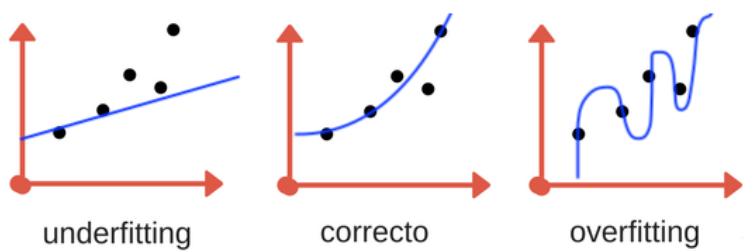
Observación
Cuanto más complejo permitimos que sea nuestro modelo, mejor podremos predecir en los datos de entrenamiento. Sin embargo, si nuestro modelo se vuelve demasiado complejo, empezamos a centrarnos demasiado en cada punto de datos individual de nuestro conjunto de entrenamiento, y el modelo no se generalizará correctamente con nuevos datos.
Hay un punto intermedio (sweet spot) en el que se obtiene el mejor rendimiento de generalización. Este es el modelo que queremos encontrar. El equilibrio entre el overfitting y underfitting.
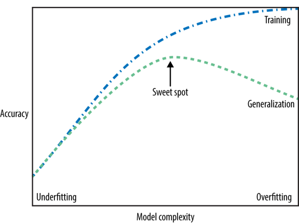
Análisis exploratorio#
Agreguemos los paquetes
import numpy as np # Importa la librería NumPy para operaciones matemáticas avanzadas.
import matplotlib.pyplot as plt # Importa Matplotlib para visualización de datos.
import pandas as pd # Importa pandas para manipulación y análisis de datos.
import seaborn as sns # Importa seaborn para la visualizacion de datos
import warnings # Importa warnings para las advertencia
# Importa funciones de Scikit-learn para dividir el conjunto de datos y aplicar regresión lineal.
from sklearn.model_selection import train_test_split
from sklearn.linear_model import LinearRegression
# Importa la librería Statsmodels para ajustar modelos de regresión con más opciones estadísticas.
import statsmodels.formula.api as smf
Carguemos los datos
df = pd.read_csv(r"_data/dataml/housing.csv")
# Mostrar las primeras filas del conjunto de datos
df.head()
| longitude | latitude | housing_median_age | total_rooms | total_bedrooms | population | households | median_income | median_house_value | ocean_proximity | |
|---|---|---|---|---|---|---|---|---|---|---|
| 0 | -122.23 | 37.88 | 41.0 | 880.0 | 129.0 | 322.0 | 126.0 | 8.3252 | 452600.0 | NEAR BAY |
| 1 | -122.22 | 37.86 | 21.0 | 7099.0 | 1106.0 | 2401.0 | 1138.0 | 8.3014 | 358500.0 | NEAR BAY |
| 2 | -122.24 | 37.85 | 52.0 | 1467.0 | 190.0 | 496.0 | 177.0 | 7.2574 | 352100.0 | NEAR BAY |
| 3 | -122.25 | 37.85 | 52.0 | 1274.0 | 235.0 | 558.0 | 219.0 | 5.6431 | 341300.0 | NEAR BAY |
| 4 | -122.25 | 37.85 | 52.0 | 1627.0 | 280.0 | 565.0 | 259.0 | 3.8462 | 342200.0 | NEAR BAY |
Las variables del conjunto de datos son
longitude: Coordenada de longitud de la ubicación de la vivienda.
latitude: Coordenada de latitud de la ubicación de la vivienda.
housing_median_age: Edad media de las casas en la zona.
total_rooms: Número total de habitaciones en las casas de la zona.
total_bedrooms: Número total de dormitorios en las casas de la zona.
population: Población total de la zona.
households: Número total de hogares en la zona.
median_income: Ingreso medio de los hogares en la zona (en decenas de miles de dólares).
median_house_value: Valor medio de las casas en la zona (en dólares).
ocean_proximity: Proximidad del área al océano.
Mostrar las 5 ultimas filas
# Mostrar las ultimas filas del conjunto de datos
df.tail()
| longitude | latitude | housing_median_age | total_rooms | total_bedrooms | population | households | median_income | median_house_value | ocean_proximity | |
|---|---|---|---|---|---|---|---|---|---|---|
| 20635 | -121.09 | 39.48 | 25.0 | 1665.0 | 374.0 | 845.0 | 330.0 | 1.5603 | 78100.0 | INLAND |
| 20636 | -121.21 | 39.49 | 18.0 | 697.0 | 150.0 | 356.0 | 114.0 | 2.5568 | 77100.0 | INLAND |
| 20637 | -121.22 | 39.43 | 17.0 | 2254.0 | 485.0 | 1007.0 | 433.0 | 1.7000 | 92300.0 | INLAND |
| 20638 | -121.32 | 39.43 | 18.0 | 1860.0 | 409.0 | 741.0 | 349.0 | 1.8672 | 84700.0 | INLAND |
| 20639 | -121.24 | 39.37 | 16.0 | 2785.0 | 616.0 | 1387.0 | 530.0 | 2.3886 | 89400.0 | INLAND |
Información del dataset
# Información de las variables
df.info()
<class 'pandas.core.frame.DataFrame'>
RangeIndex: 20640 entries, 0 to 20639
Data columns (total 10 columns):
# Column Non-Null Count Dtype
--- ------ -------------- -----
0 longitude 20640 non-null float64
1 latitude 20640 non-null float64
2 housing_median_age 20640 non-null float64
3 total_rooms 20640 non-null float64
4 total_bedrooms 20433 non-null float64
5 population 20640 non-null float64
6 households 20640 non-null float64
7 median_income 20640 non-null float64
8 median_house_value 20640 non-null float64
9 ocean_proximity 20640 non-null object
dtypes: float64(9), object(1)
memory usage: 1.6+ MB
Veamos los datos faltantes o NaNs
missing_values = df.isna().sum()
total_rows = df.shape[0]
missing_vars = missing_values[missing_values > 0]
missing_info_df = pd.DataFrame({
'Datos faltantes': missing_vars,
'Porcentaje (%)': round((missing_vars / total_rows) * 100,2)})
missing_info_df
| Datos faltantes | Porcentaje (%) | |
|---|---|---|
| total_bedrooms | 207 | 1.0 |
Resumen estadístico de la variable numérica respuesta
median_house_value
# descriptiva
pd.set_option('display.precision', 2)
df.median_house_value.describe()
count 20640.00
mean 206855.82
std 115395.62
min 14999.00
25% 119600.00
50% 179700.00
75% 264725.00
max 500001.00
Name: median_house_value, dtype: float64
Resumen estadístico de la variable numérica independientes
# descriptiva
pd.set_option('display.precision', 2)
df.drop(columns='median_house_value').describe().T
| count | mean | std | min | 25% | 50% | 75% | max | |
|---|---|---|---|---|---|---|---|---|
| longitude | 20640.0 | -119.57 | 2.00 | -124.35 | -121.80 | -118.49 | -118.01 | -114.31 |
| latitude | 20640.0 | 35.63 | 2.14 | 32.54 | 33.93 | 34.26 | 37.71 | 41.95 |
| housing_median_age | 20640.0 | 28.64 | 12.59 | 1.00 | 18.00 | 29.00 | 37.00 | 52.00 |
| total_rooms | 20640.0 | 2635.76 | 2181.62 | 2.00 | 1447.75 | 2127.00 | 3148.00 | 39320.00 |
| total_bedrooms | 20433.0 | 537.87 | 421.39 | 1.00 | 296.00 | 435.00 | 647.00 | 6445.00 |
| population | 20640.0 | 1425.48 | 1132.46 | 3.00 | 787.00 | 1166.00 | 1725.00 | 35682.00 |
| households | 20640.0 | 499.54 | 382.33 | 1.00 | 280.00 | 409.00 | 605.00 | 6082.00 |
| median_income | 20640.0 | 3.87 | 1.90 | 0.50 | 2.56 | 3.53 | 4.74 | 15.00 |
Resumen estadístico de las variables categóricas
# Descriptivo de una sola variable categórica solo conteo
conteo = df['ocean_proximity'].value_counts()
# Descriptivo de una sola variable categórica solo proporcion
proporciones = df['ocean_proximity'].value_counts(normalize=True)
# Combinar los resultados en un solo DataFrame
resultado = pd.DataFrame({
'Conteo': conteo,
'Proporción': proporciones
})
# imprimir
pd.set_option('display.precision', 4)
print(resultado)
Conteo Proporción
ocean_proximity
<1H OCEAN 9136 0.4426
INLAND 6551 0.3174
NEAR OCEAN 2658 0.1288
NEAR BAY 2290 0.1109
ISLAND 5 0.0002
Veamos las visualizaciones de los datos, empezamos con la variable respuesta
median_house_value
# Ignorar advertencias de futuras versiones
warnings.filterwarnings('ignore')
# Variable respuesta
column = 'median_house_value'
# Ajustar el estilo de Seaborn
sns.set(style="whitegrid", font_scale=1.4)
# Imprimir asimetría y curtosis
print('Columna:', column)
print('Asimetría (Skew):', round(df[column].skew(), 2))
print('Curtosis:', round(df[column].kurtosis(), 2))
# Crear figura
plt.figure(figsize=(14, 6))
# Histograma con curva de densidad
plt.subplot(1, 2, 1)
sns.histplot(df[column], kde=True, color='green')
plt.title(f'Histograma de {column}')
plt.xlabel(column)
# Diagrama de cajas
plt.subplot(1, 2, 2)
sns.boxplot(x=df[column], color='green')
plt.title(f'Diagrama de cajas de {column}')
plt.xlabel(column)
plt.tight_layout()
plt.show()
Columna: median_house_value
Asimetría (Skew): 0.98
Curtosis: 0.33
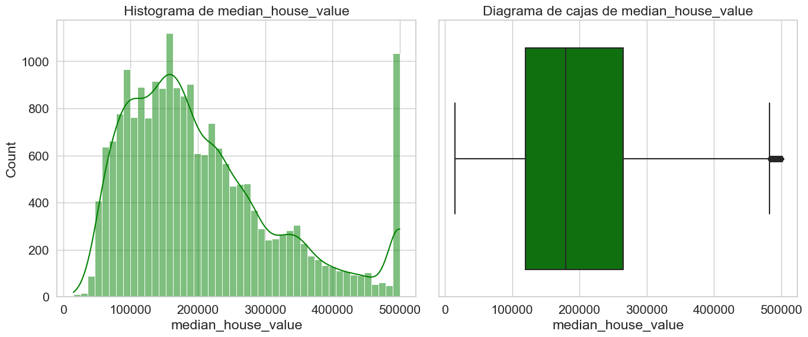
Ahora veamos las visualizaciones de las variable independintes
# Ignorar advertencias de futuras versiones
warnings.filterwarnings('ignore')
# Extraer las variables numéricas excepto la variable respuesta
numerical_columns = df.select_dtypes(include=['float64', 'int64']).drop(columns='median_house_value').columns
# Ajustar el estilo de Seaborn
sns.set(style="whitegrid", font_scale=1.4)
# Crear histogramas con KDE y diagramas de cajas
for column in numerical_columns:
# Imprimir asimetría y curtosis
print('Columna:', column)
print('Asimetría (Skew):', round(df[column].skew(), 2))
print('Curtosis:', round(df[column].kurtosis(), 2))
# Crear figura
plt.figure(figsize=(14, 6))
# Histograma con KDE
plt.subplot(1, 2, 1)
sns.histplot(df[column], kde=True, color='green')
plt.title(f'Histograma de {column}')
# Diagrama de cajas
plt.subplot(1, 2, 2)
sns.boxplot(x=df[column], color='green')
plt.title(f'Diagrama de cajas de {column}')
plt.tight_layout()
plt.show()
Columna: longitude
Asimetría (Skew): -0.3
Curtosis: -1.33
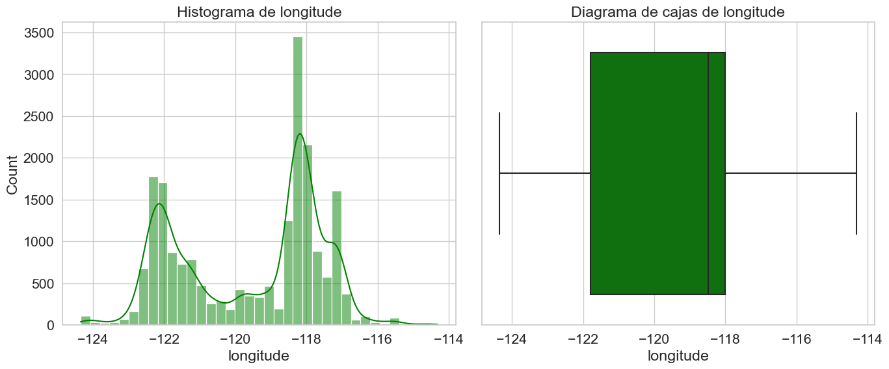
Columna: latitude
Asimetría (Skew): 0.47
Curtosis: -1.12
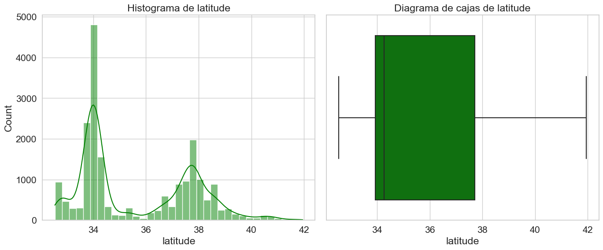
Columna: housing_median_age
Asimetría (Skew): 0.06
Curtosis: -0.8
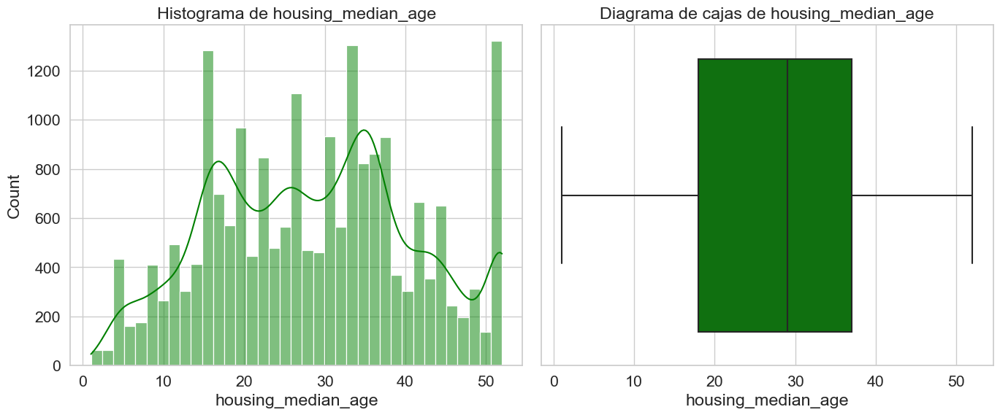
Columna: total_rooms
Asimetría (Skew): 4.15
Curtosis: 32.63
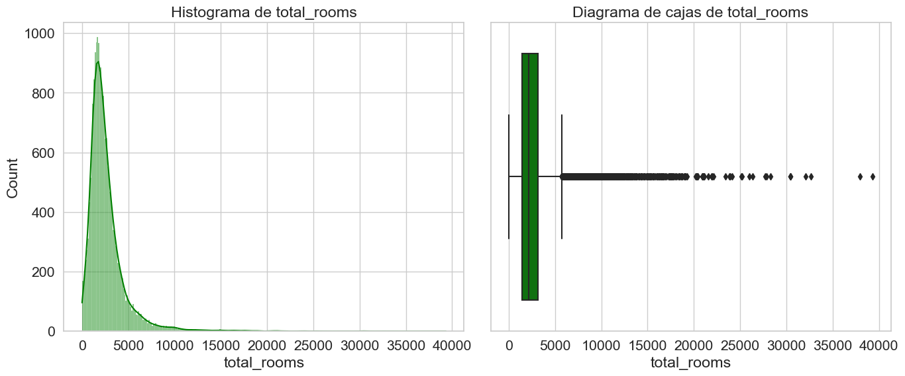
Columna: total_bedrooms
Asimetría (Skew): 3.46
Curtosis: 21.99
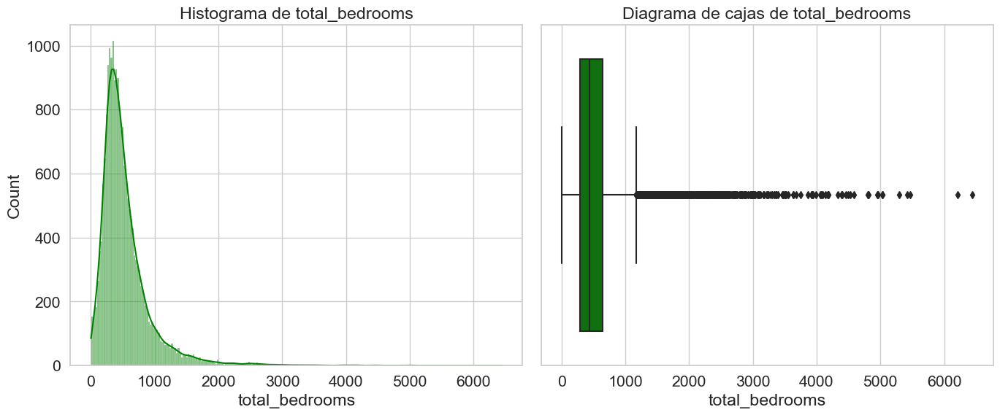
Columna: population
Asimetría (Skew): 4.94
Curtosis: 73.55
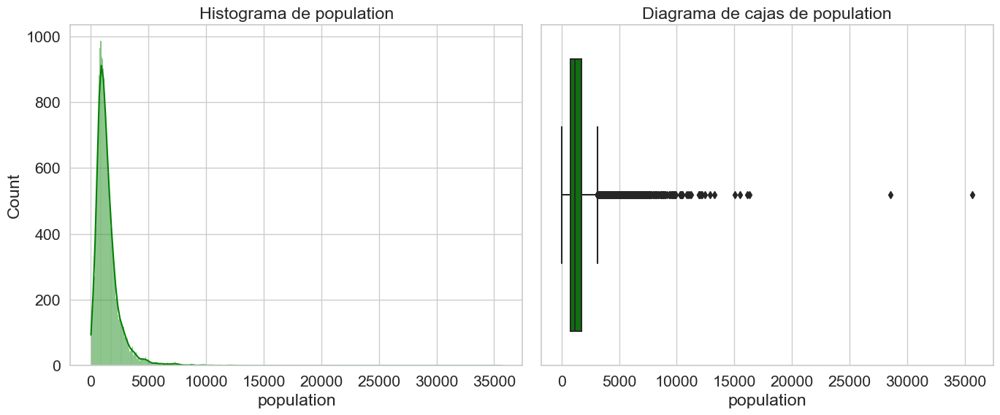
Columna: households
Asimetría (Skew): 3.41
Curtosis: 22.06
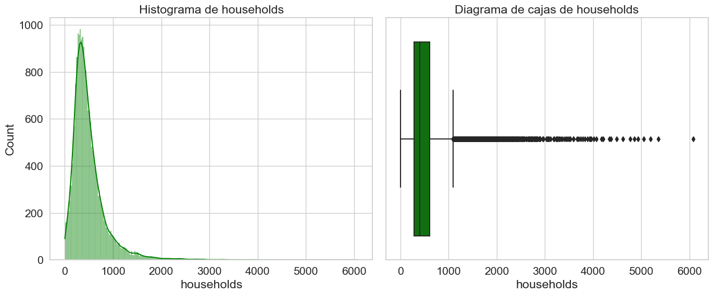
Columna: median_income
Asimetría (Skew): 1.65
Curtosis: 4.95
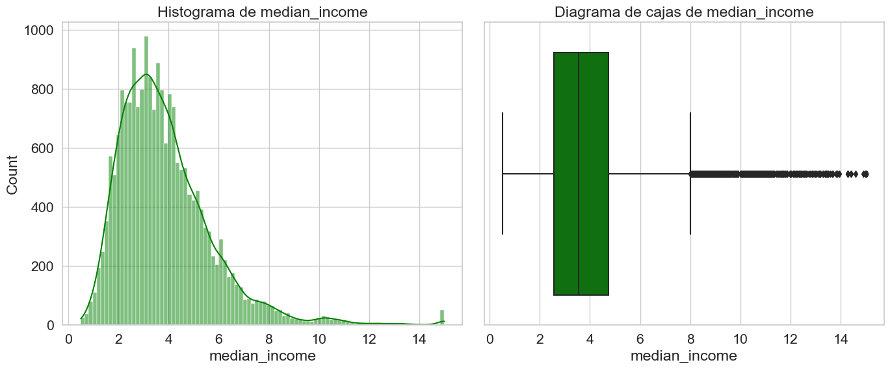
Ahora la visualizacion de la variable categórica
# Ajustar el gráfico aumentando el eje Y para mayor visibilidad de las etiquetas
plt.figure(figsize=(10, 6))
ax = sns.countplot(x='ocean_proximity', data=df, color='darkblue')
# Añadir el conteo y el porcentaje encima de cada barra
total = len(df) # Número total de registros
for p in ax.patches:
count = p.get_height()
percentage = 100 * count / total
ax.annotate(f'{count}\n({percentage:.1f}%)',
(p.get_x() + p.get_width() / 2., count),
ha='center', va='baseline', fontsize=12, color='black', xytext=(0, 5), textcoords='offset points')
# Ajustar el límite del eje Y
ax.set_ylim(0, ax.get_ylim()[1] * 1.1)
# Personalización del gráfico
plt.title('Distribución de ocean_proximity')
plt.xlabel('Categorías de ocean_proximity')
plt.ylabel('Frecuencia')
plt.xticks(rotation=0) # Rotar las etiquetas para mejor visibilidad
plt.show()
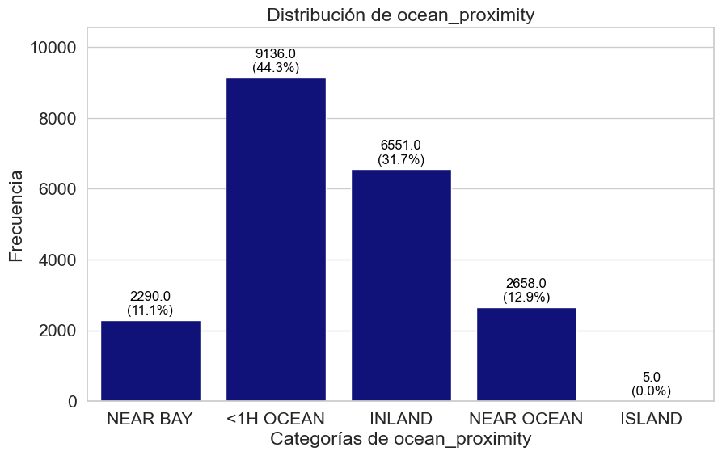
Veamos la visualizacion bivariada
# Removiendo la variable categórica
df_cor = df.drop(columns=['ocean_proximity'])
# Realizar el pairplot para las variables numéricas sin usar 'hue' ya que no tenemos una variable categórica adecuada
sns.pairplot(data=df_cor, diag_kind='kde', palette='viridis')
plt.suptitle('Pairplot de Variables Numéricas', y=1.02, fontsize=14)
plt.show()
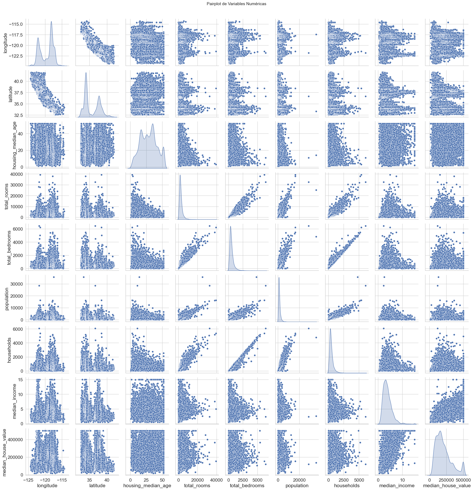
Veamos las correlaciones, es importante garantizar la ausencia de relación entre atríbutos, por tal razón lo utilizaremos la función
corr(method='spearman')para verificar que se cumpla esta condición.
# correlation
pd.set_option('display.precision', 4)
df_cor.corr(method='spearman')
| longitude | latitude | housing_median_age | total_rooms | total_bedrooms | population | households | median_income | median_house_value | |
|---|---|---|---|---|---|---|---|---|---|
| longitude | 1.0000 | -0.8792 | -0.1508 | 0.0401 | 0.0639 | 0.1235 | 0.0600 | -0.0099 | -0.0697 |
| latitude | -0.8792 | 1.0000 | 0.0324 | -0.0184 | -0.0566 | -0.1236 | -0.0743 | -0.0880 | -0.1657 |
| housing_median_age | -0.1508 | 0.0324 | 1.0000 | -0.3572 | -0.3065 | -0.2839 | -0.2820 | -0.1473 | 0.0749 |
| total_rooms | 0.0401 | -0.0184 | -0.3572 | 1.0000 | 0.9150 | 0.8162 | 0.9067 | 0.2713 | 0.2060 |
| total_bedrooms | 0.0639 | -0.0566 | -0.3065 | 0.9150 | 1.0000 | 0.8709 | 0.9756 | -0.0062 | 0.0863 |
| population | 0.1235 | -0.1236 | -0.2839 | 0.8162 | 0.8709 | 1.0000 | 0.9039 | 0.0063 | 0.0038 |
| households | 0.0600 | -0.0743 | -0.2820 | 0.9067 | 0.9756 | 0.9039 | 1.0000 | 0.0303 | 0.1127 |
| median_income | -0.0099 | -0.0880 | -0.1473 | 0.2713 | -0.0062 | 0.0063 | 0.0303 | 1.0000 | 0.6768 |
| median_house_value | -0.0697 | -0.1657 | 0.0749 | 0.2060 | 0.0863 | 0.0038 | 0.1127 | 0.6768 | 1.0000 |
median_incometiene la mayor correlación positiva conmedian_house_value(0.6768).total_roomsytotal_bedroomsestán fuertemente correlacionados (0.9150).La correlación entre
median_house_valuey otras variables comototal_rooms,total_bedroomsopopulationes baja.Hay una correlación negativa entre
latitudeymedian_house_value(-0.1657), sugiriendo precios más altos al sur.populationno está correlacionada significativamente conmedian_house_value(0.0038).
Ahora, realicemos la gráfica de correlación
# Calculating the correlation using the Spearman method
correlation_matrix = df_cor.corr(method='spearman')
# Plotting the heatmap
plt.figure(figsize=(8, 6))
sns.heatmap(correlation_matrix, annot=True, cmap='coolwarm_r', fmt='.2f', vmin=-1, vmax=1, center=0)
plt.title('Matriz de Correlación de Spearman', fontsize=14)
plt.show()
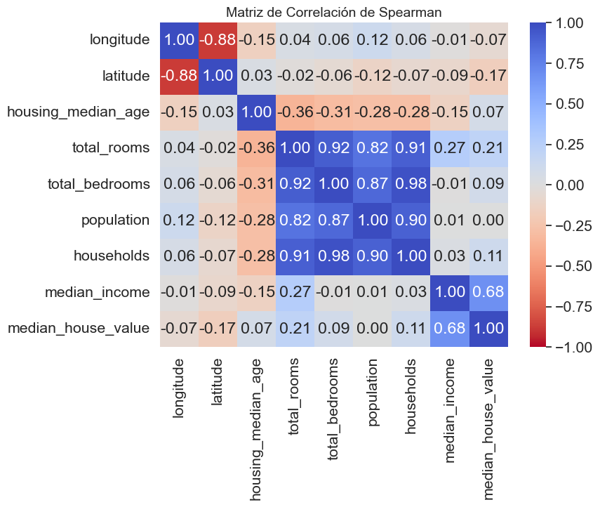
Variance Inflation Factor (VIF)#
¿Qué es el VIF?#
El Factor de Inflación de la Varianza (Variance Inflation Factor, VIF) es una medida estadística utilizada para detectar la multicolinealidad entre las variables predictoras de un modelo de regresión.
La multicolinealidad ocurre cuando una variable independiente puede explicarse en gran medida por las demás variables del modelo, lo que provoca estimaciones inestables de los coeficientes.
donde:
\(R_j^2\) corresponde al coeficiente de determinación obtenido al regredir la variable (X_j) sobre las demás variables predictoras.
Su interpretación
VIF |
Interpretación |
|---|---|
1 |
No existe multicolinealidad. |
1 - 5 |
Multicolinealidad baja o moderada. |
5 - 10 |
Multicolinealidad alta; conviene revisar la variable. |
> 10 |
Multicolinealidad severa; generalmente se recomienda eliminar o transformar la variable. |
¿Por qué es importante?#
Una alta multicolinealidad puede ocasionar:
Coeficientes poco estables.
Mayor varianza en las estimaciones.
Dificultad para interpretar la importancia de cada predictor.
Menor capacidad de generalización del modelo.
One-Hot Encoding#
¿Qué es One-Hot Encoding?#
One-Hot Encoding es una técnica de preprocesamiento que transforma variables categóricas en variables binarias (0 y 1), permitiendo que los algoritmos de aprendizaje automático puedan utilizarlas.
Cada categoría genera una nueva columna:
1 indica que la observación pertenece a esa categoría.
0 indica que no pertenece.
Por ejmeplo, variable original:
ocean_proximity |
|---|
NEAR BAY |
INLAND |
NEAR OCEAN |
Después de aplicar One-Hot Encoding:
NEAR BAY |
INLAND |
NEAR OCEAN |
|---|---|---|
1 |
0 |
0 |
0 |
1 |
0 |
0 |
0 |
1 |
¿Por qué utilizar One-Hot Encoding?#
Los algoritmos de Machine Learning requieren variables numéricas. Si una variable categórica se codifica como números enteros, el modelo podría interpretar erróneamente que existe un orden entre las categorías.
Por ejemplo:
INLAND = 0
NEAR BAY = 1
NEAR OCEAN = 2
Esto sugiere una relación ordinal que realmente no existe. One-Hot Encoding evita este problema.
Ventajas#
Conserva la naturaleza nominal de las variables.
Evita introducir relaciones de orden inexistentes.
Compatible con la mayoría de algoritmos de Machine Learning.
Fácil de interpretar.
Desventajas#
Incrementa el número de variables.
Puede generar alta dimensionalidad cuando existen muchas categorías.
En modelos lineales puede producir multicolinealidad si no se elimina una categoría de referencia (Dummy Variable Trap).
Calculemos el VIF para evitar la multicolinealidad de las variables
from sklearn.preprocessing import OneHotEncoder
from statsmodels.stats.outliers_influence import variance_inflation_factor
# 1. Separar características independientes (X) eliminando el target
X_completo = df.drop(columns=['median_house_value'])
# 2. Identificar columnas categóricas y numéricas
col_categoricas = ['ocean_proximity']
col_numericas = X_completo.select_dtypes(include=['float64', 'int64']).columns.tolist()
# 3. Codificar la variable categórica para que sea procesable por el VIF
encoder_ini = OneHotEncoder(drop='first', sparse_output=False, handle_unknown='ignore')
X_cat_encoded = encoder_ini.fit_transform(X_completo[col_categoricas])
nombres_cat = encoder_ini.get_feature_names_out(col_categoricas)
# 4. Concatenar manteniendo consistencia de índices
X_cat_df = pd.DataFrame(X_cat_encoded, columns=nombres_cat, index=X_completo.index)
X_unificado = pd.concat([X_completo[col_numericas], X_cat_df], axis=1)
# 5. Imputación rápida temporal (El cálculo de VIF no tolera valores nulos)
X_unificado['total_bedrooms'] = X_unificado['total_bedrooms'].fillna(X_unificado['total_bedrooms'].mean())
# 6. Algoritmo de cálculo del VIF
X_vif = X_unificado.copy()
X_vif['intercept'] = 1 # statsmodels requiere explícitamente agregar una constante (intersección)
vif_data = pd.DataFrame()
vif_data["Variable"] = X_vif.columns
vif_data["VIF"] = [variance_inflation_factor(X_vif.values, i) for i in range(X_vif.shape[1])]
# Filtrar el intercepto y ordenar los resultados de mayor a menor peligro
vif_data = vif_data[vif_data["Variable"] != 'intercept'].sort_values(by="VIF", ascending=False)
print("=== VIF INICIAL (DATOS COMPLETOS ANTES DE TODO) ===")
print(vif_data.to_string(index=False))
=== VIF INICIAL (DATOS COMPLETOS ANTES DE TODO) ===
Variable VIF
households 28.6378
total_bedrooms 27.5036
latitude 19.9303
longitude 18.0347
total_rooms 12.3777
population 6.3450
ocean_proximity_INLAND 2.8543
median_income 1.7429
ocean_proximity_NEAR BAY 1.5657
housing_median_age 1.3219
ocean_proximity_NEAR OCEAN 1.1972
ocean_proximity_ISLAND 1.0020
Para solucionar la alarma roja del VIF sin perder la información valiosa de tus datos, haremos ingeniería de características (Feature Engineering) para transformar el bloque redundante en variables relativas Podemos reemplazar las columnas problemáticas creando estas tres nuevas variables:
rooms_per_household = total_rooms / households(Promedio de cuartos por casa).bedrooms_per_room = total_bedrooms / total_rooms(Densidad de dormitorios por cuarto).population_per_household = population / households(Promedio de habitantes por hogar).
# Función auxiliar para calcular el VIF (statsmodels requiere agregar una constante/intercepto)
def calcular_vif(df_features):
X_vif = df_features.copy()
X_vif['intercept'] = 1
vif_data = pd.DataFrame()
vif_data["Variable"] = X_vif.columns
vif_data["VIF"] = [variance_inflation_factor(X_vif.values, i) for i in range(X_vif.shape[1])]
return vif_data[vif_data["Variable"] != 'intercept'].sort_values(by="VIF", ascending=False)
# =========================================================================
# VIF FINAL (Con tus columnas transformadas)
# =========================================================================
df_fe = df.copy()
df_fe['rooms_per_household'] = df_fe['total_rooms'] / df_fe['households']
df_fe['bedrooms_per_room'] = df_fe['total_bedrooms'] / df_fe['total_rooms']
df_fe['population_per_household'] = df_fe['population'] / df_fe['households']
# Removemos las variables originales que causaban la colinealidad masiva
X_transformado = df_fe.drop(columns=['median_house_value', 'total_rooms', 'total_bedrooms', 'population', 'households'])
col_numericas_trans = X_transformado.select_dtypes(include=['float64', 'int64']).columns.tolist()
# Procesamos categorías e imputamos nulos sobre las nuevas columnas
encoder_fin = OneHotEncoder(drop='first', sparse_output=False, handle_unknown='ignore')
X_cat_fin = encoder_fin.fit_transform(X_transformado[col_categoricas])
X_enc_fin = pd.concat([X_transformado[col_numericas_trans], pd.DataFrame(X_cat_fin, columns=encoder_fin.get_feature_names_out(col_categoricas))], axis=1)
X_enc_fin['bedrooms_per_room'] = X_enc_fin['bedrooms_per_room'].fillna(X_enc_fin['bedrooms_per_room'].mean())
print("\n=== VIF FINAL (CON INGENIERÍA DE CARACTERÍSTICAS APLICADA) ===")
print(calcular_vif(X_enc_fin).to_string(index=False))
=== VIF FINAL (CON INGENIERÍA DE CARACTERÍSTICAS APLICADA) ===
Variable VIF
latitude 20.1999
longitude 18.2148
ocean_proximity_INLAND 2.8967
median_income 2.0411
bedrooms_per_room 1.9210
ocean_proximity_NEAR BAY 1.5456
rooms_per_household 1.3181
ocean_proximity_NEAR OCEAN 1.1841
housing_median_age 1.1648
population_per_household 1.0024
ocean_proximity_ISLAND 1.0016
División de los datos en entrenamiento y prueba#
¿Por qué dividir el conjunto de datos?#
En Machine Learning, el objetivo principal no es que un modelo aprenda perfectamente los datos disponibles, sino que sea capaz de generalizar y realizar buenas predicciones sobre datos nuevos.
Para evaluar esta capacidad, el conjunto de datos se divide en dos subconjuntos:
Conjunto de entrenamiento (Training Set): utilizado para aprender los patrones presentes en los datos.
Conjunto de prueba (Test Set): utilizado únicamente para evaluar el desempeño final del modelo sobre datos que nunca ha visto.
Esta estrategia permite obtener una estimación más realista del rendimiento del modelo en escenarios reales.
Conjunto de entrenamiento#
El conjunto de entrenamiento contiene la mayor parte de las observaciones y se utiliza para que el algoritmo ajuste sus parámetros internos.
Durante esta etapa, el modelo aprende la relación existente entre las variables predictoras (X) y la variable respuesta (y).
Por ejemplo, si el objetivo es predecir el valor de una vivienda, el modelo aprenderá cómo variables como el ingreso medio, la ubicación y el número de habitaciones influyen sobre el precio.
Conjunto de prueba#
El conjunto de prueba permanece completamente separado durante el entrenamiento.
Una vez entrenado el modelo, este conjunto se utiliza para evaluar qué tan bien es capaz de realizar predicciones sobre datos desconocidos.
Esta evaluación permite medir la capacidad de generalización del modelo y detectar problemas como el sobreajuste (overfitting).
Proporciones más utilizadas#
No existe una única división correcta; sin embargo, las más comunes son:
Entrenamiento |
Prueba |
|---|---|
70 % |
30 % |
75 % |
25 % |
80 % |
20 % |
90 % |
10 % |
La división 80 % para entrenamiento y 20 % para prueba es una de las más utilizadas porque ofrece un buen equilibrio entre el aprendizaje del modelo y una evaluación confiable.
Importancia de la división entrenamiento-prueba#
Separar los datos evita evaluar el modelo con las mismas observaciones utilizadas durante el aprendizaje.
Si el modelo se evaluara utilizando los mismos datos con los que fue entrenado, el desempeño obtenido sería demasiado optimista y no reflejaría su comportamiento sobre datos nuevos.
Por esta razón, la división entre entrenamiento y prueba constituye una de las etapas fundamentales del proceso de construcción de modelos predictivos.
Selección del conjunto de entrenamiento y prueba aplicando
onehotencoder
import pandas as pd # Para la manipulación y carga de los datos (DataFrames)
from sklearn.model_selection import train_test_split # Para separar en Train y Test (evita data leakage)
from sklearn.preprocessing import OneHotEncoder, StandardScaler # Para convertir texto categórico en números (0 y 1) y se estandarizan las variables numéricas
from sklearn.experimental import enable_iterative_imputer # Obligatorio para activar el imputador avanzado
from sklearn.impute import IterativeImputer # Para llenar nulos mediante modelos de regresión (MICE)
from sklearn.compose import ColumnTransformer # Para aplicar transformaciones diferentes a columnas distintas
# =========================================================================
# 1. CARGA DE DATOS E INGENIERÍA DE CARACTERÍSTICAS
# =========================================================================
df = pd.read_csv(r"C:\Documentos\Books_CienciaDatos\DSTripleA\docs\_data\dataml\housing.csv")
# Creamos las tasas relativas que reducen la multicolinealidad masiva
df['rooms_per_household'] = df['total_rooms'] / df['households']
df['bedrooms_per_room'] = df['total_bedrooms'] / df['total_rooms'] # Hereda los nulos
df['population_per_household'] = df['population'] / df['households']
# Removemos los totales acumulados (problemáticos) y aislamos el target
X = df.drop(columns=['median_house_value', 'total_rooms', 'total_bedrooms', 'population', 'households'])
y = df['median_house_value']
# =========================================================================
# PASO 2: SEPARACIÓN EN ENTRENAMIENTO Y TEST (Train/Test Split)
# =========================================================================
# Hacemos esto primero para blindarnos completamente contra el Data Leakage
# Divide los datos en conjuntos de entrenamiento (80%) y prueba (20%)
X_train, X_test, y_train, y_test = train_test_split(
X, # Características predictoras (variables independientes)
y, # Variable objetivo (el precio de las casas a predecir)
test_size=0.2, # Proporción del 20% reservada para el conjunto de prueba
shuffle=True, # Mezcla los datos aleatoriamente antes de dividirlos
random_state=42 # Semilla fija para que la división sea reproducible al replicar el código
)
Observación
El número
42es comúnmente elegido en la literatura relacionada con la inteligencia artificial (AI) como un homenaje al libro de Douglas Adams, The Hitchhiker’s Guide to the Galaxy, una popular serie de ciencia ficción. En este libro, el número 42 es presentado como la respuesta a la gran pregunta sobre “la vida, el universo y todo lo demás”, según los cálculos de un superordenador llamado “Deep Thought”. Esta referencia ha ganado notoriedad tanto entre los aficionados al género como entre los miembros de la comunidad científica.En el contexto de la programación, el parámetro
random_statepuede tomar cualquier número entero. Si bien se suele utilizar42por razones simbólicas, en realidad cualquier entero positivo es válido. Además, se podría realizar ungrid searchpara encontrar el valor derandom_stateque proporcione el mejor rendimiento del modelo. Más adelante, abordaremos el uso de GridSearch.Es importante tener en cuenta que, si no se establece un valor específico para
random_state, como42u otro número entero, cada vez que se ejecute el código, se generará un conjunto de prueba diferente, lo que puede afectar la reproducibilidad de los resultados.
# 1. Calcular el tamaño (filas, columnas) de los conjuntos de características
print("Entrenamiento (X_train):", X_train.shape)
print("Prueba (X_test):", X_test.shape)
# 2. Calcular el tamaño (filas,) de los conjuntos de la variable objetivo
print("Target Entrenamiento (y_train):", y_train.shape)
print("Target Prueba (y_test):", y_test.shape)
# 3. Verificar que las proporciones y promedios del precio sean similares
print("\nPromedio del precio en Entrenamiento:", y_train.mean())
print("Promedio del precio en Prueba:", y_test.mean())
Entrenamiento (X_train): (16512, 8)
Prueba (X_test): (4128, 8)
Target Entrenamiento (y_train): (16512,)
Target Prueba (y_test): (4128,)
Promedio del precio en Entrenamiento: 207194.6937378876
Promedio del precio en Prueba: 205500.30959302327
# =========================================================================
# PASO 3: CODIFICACIÓN CATEGÓRICA CON ONEHOTENCODER
# =========================================================================
# Identificamos las columnas por su tipo
col_categoricas = ['ocean_proximity']
col_numericas = X_train.select_dtypes(include=['float64', 'int64']).columns.tolist()
# --- A. Codificación Categórica (OneHotEncoder) ---
encoder = OneHotEncoder(drop='first', sparse_output=False, handle_unknown='ignore')
# Ajustamos en Train y transformamos ambos conjuntos
X_train_cat = encoder.fit_transform(X_train[col_categoricas])
X_test_cat = encoder.transform(X_test[col_categoricas])
nombres_cat = encoder.get_feature_names_out(col_categoricas)
X_train_encoded = pd.concat([X_train[col_numericas], pd.DataFrame(X_train_cat, columns=nombres_cat, index=X_train.index)], axis=1)
X_test_encoded = pd.concat([X_test[col_numericas], pd.DataFrame(X_test_cat, columns=nombres_cat, index=X_test.index)], axis=1)
# Ver las primeras 5 filas del conjunto de entrenamiento transformado
X_train_encoded.head()
| longitude | latitude | housing_median_age | median_income | rooms_per_household | bedrooms_per_room | population_per_household | ocean_proximity_INLAND | ocean_proximity_ISLAND | ocean_proximity_NEAR BAY | ocean_proximity_NEAR OCEAN | |
|---|---|---|---|---|---|---|---|---|---|---|---|
| 14196 | -117.03 | 32.71 | 33.0 | 3.2596 | 5.0177 | 0.2006 | 3.6918 | 0.0 | 0.0 | 0.0 | 1.0 |
| 8267 | -118.16 | 33.77 | 49.0 | 3.8125 | 4.4735 | 0.2327 | 1.7381 | 0.0 | 0.0 | 0.0 | 1.0 |
| 17445 | -120.48 | 34.66 | 4.0 | 4.1563 | 5.6458 | 0.1745 | 2.7232 | 0.0 | 0.0 | 0.0 | 1.0 |
| 14265 | -117.11 | 32.69 | 36.0 | 1.9425 | 4.0028 | 0.2583 | 3.9944 | 0.0 | 0.0 | 0.0 | 1.0 |
| 2271 | -119.80 | 36.78 | 43.0 | 3.5542 | 6.2684 | 0.1809 | 2.3000 | 1.0 | 0.0 | 0.0 | 0.0 |
# Ver las primeras 5 filas del conjunto de prueba transformado
X_test_encoded.head()
| longitude | latitude | housing_median_age | median_income | rooms_per_household | bedrooms_per_room | population_per_household | ocean_proximity_INLAND | ocean_proximity_ISLAND | ocean_proximity_NEAR BAY | ocean_proximity_NEAR OCEAN | |
|---|---|---|---|---|---|---|---|---|---|---|---|
| 20046 | -119.01 | 36.06 | 25.0 | 1.6812 | 4.1922 | NaN | 3.8774 | 1.0 | 0.0 | 0.0 | 0.0 |
| 3024 | -119.46 | 35.14 | 30.0 | 2.5313 | 5.0394 | NaN | 2.6798 | 1.0 | 0.0 | 0.0 | 0.0 |
| 15663 | -122.44 | 37.80 | 52.0 | 3.4801 | 3.9772 | NaN | 1.3603 | 0.0 | 0.0 | 1.0 | 0.0 |
| 20484 | -118.72 | 34.28 | 17.0 | 5.7376 | 6.1636 | NaN | 3.4444 | 0.0 | 0.0 | 0.0 | 0.0 |
| 9814 | -121.93 | 36.62 | 34.0 | 3.7250 | 5.4930 | NaN | 2.4836 | 0.0 | 0.0 | 0.0 | 1.0 |
Ahora, realizamos la imputación de los datos
# --- B. Imputación Multivariada (IterativeImputer) ---
# Estima los nulos en 'bedrooms_per_room' basándose en las correlaciones del Train
imputer = IterativeImputer(random_state=42, max_iter=10)
X_train_imputed = imputer.fit_transform(X_train_encoded)
X_test_imputed = imputer.transform(X_test_encoded)
# (Opcional) Convertir de nuevo a DataFrame para verificar que todo esté limpio y ordenado
X_train_imputed_df = pd.DataFrame(X_train_imputed, columns=X_train_encoded.columns)
X_train_imputed_df.head()
| longitude | latitude | housing_median_age | median_income | rooms_per_household | bedrooms_per_room | population_per_household | ocean_proximity_INLAND | ocean_proximity_ISLAND | ocean_proximity_NEAR BAY | ocean_proximity_NEAR OCEAN | |
|---|---|---|---|---|---|---|---|---|---|---|---|
| 0 | -117.03 | 32.71 | 33.0 | 3.2596 | 5.0177 | 0.2006 | 3.6918 | 0.0 | 0.0 | 0.0 | 1.0 |
| 1 | -118.16 | 33.77 | 49.0 | 3.8125 | 4.4735 | 0.2327 | 1.7381 | 0.0 | 0.0 | 0.0 | 1.0 |
| 2 | -120.48 | 34.66 | 4.0 | 4.1563 | 5.6458 | 0.1745 | 2.7232 | 0.0 | 0.0 | 0.0 | 1.0 |
| 3 | -117.11 | 32.69 | 36.0 | 1.9425 | 4.0028 | 0.2583 | 3.9944 | 0.0 | 0.0 | 0.0 | 1.0 |
| 4 | -119.80 | 36.78 | 43.0 | 3.5542 | 6.2684 | 0.1809 | 2.3000 | 1.0 | 0.0 | 0.0 | 0.0 |
Estandarización o escalado de los datos#
¿Qué es el escalado de datos?#
El escalado o estandarización es una etapa del preprocesamiento de datos que consiste en transformar las variables numéricas para que tengan una escala comparable. Su objetivo es evitar que variables con valores muy grandes dominen el proceso de aprendizaje del modelo.
Por ejemplo, en un conjunto de datos de viviendas:
Ingreso medio: entre 1 y 15.
Número de habitaciones: entre 2 y 39 320.
Latitud: entre 32 y 42.
Aunque todas son variables importantes, sus diferentes magnitudes pueden influir de manera desigual en algunos algoritmos de Machine Learning.
¿Por qué es importante?#
Muchos algoritmos calculan distancias o realizan optimización mediante gradientes. Si una variable tiene valores mucho mayores que las demás, tendrá una mayor influencia durante el entrenamiento, lo que puede afectar el desempeño del modelo.
El escalado permite que todas las variables contribuyan de manera equilibrada al proceso de aprendizaje.
Estandarización (Standardization)#
La estandarización transforma cada variable para que tenga:
Media igual a 0.
Desviación estándar igual a 1.
La transformación se realiza mediante:
donde:
\(x\): valor original.
\(\mu\): media de la variable.
\(\sigma\): desviación estándar.
Después de la transformación, los datos conservan su distribución, pero se encuentran en una escala común.
Normalización (Min-Max Scaling)#
La normalización transforma los datos a un intervalo determinado, generalmente entre 0 y 1.
Su expresión es:
donde:
\(x_{\min}\): valor mínimo.
\(x_{\max}\): valor máximo.
Después de aplicar esta transformación:
El valor mínimo será 0.
El valor máximo será 1.
Diferencias entre estandarización y normalización#
Estandarización |
Normalización |
|---|---|
Media = 0 |
Valores entre 0 y 1 |
Desviación estándar = 1 |
Conserva la proporción entre los datos |
Menos sensible a valores extremos |
Más sensible a valores atípicos |
Utiliza media y desviación estándar |
Utiliza mínimo y máximo |
Buenas prácticas#
El escalado debe realizarse únicamente utilizando el conjunto de entrenamiento.
Posteriormente, los mismos parámetros obtenidos (media y desviación estándar, o mínimo y máximo) deben aplicarse al conjunto de prueba.
Este procedimiento evita la fuga de información (Data Leakage), garantizando que el modelo no utilice información del conjunto de prueba durante el entrenamiento.
Estandaricemos los datos
# --- C. Estandarización Final (StandardScaler) ---
# Centra las variables a media 0 y varianza 1 para una óptima convergencia de la regresión
scaler = StandardScaler()
X_train_scaled = scaler.fit_transform(X_train_imputed)
X_test_scaled = scaler.transform(X_test_imputed)
X_train_scaled_df = pd.DataFrame(X_train_scaled, columns=X_train_encoded.columns)
X_train_scaled_df.head()
| longitude | latitude | housing_median_age | median_income | rooms_per_household | bedrooms_per_room | population_per_household | ocean_proximity_INLAND | ocean_proximity_ISLAND | ocean_proximity_NEAR BAY | ocean_proximity_NEAR OCEAN | |
|---|---|---|---|---|---|---|---|---|---|---|---|
| 0 | 1.2726 | -1.3728 | 0.3485 | -0.3262 | -0.1749 | -0.2118 | 0.0514 | -0.6806 | -0.0156 | -0.3556 | 2.6298 |
| 1 | 0.7092 | -0.8767 | 1.6181 | -0.0358 | -0.4028 | 0.3422 | -0.1174 | -0.6806 | -0.0156 | -0.3556 | 2.6298 |
| 2 | -0.4476 | -0.4601 | -1.9527 | 0.1447 | 0.0882 | -0.6617 | -0.0323 | -0.6806 | -0.0156 | -0.3556 | 2.6298 |
| 3 | 1.2327 | -1.3822 | 0.5865 | -1.0179 | -0.6000 | 0.7830 | 0.0775 | -0.6806 | -0.0156 | -0.3556 | 2.6298 |
| 4 | -0.1086 | 0.5321 | 1.1420 | -0.1715 | 0.3490 | -0.5504 | -0.0688 | 1.4693 | -0.0156 | -0.3556 | -0.3803 |
Regresión multiple#
La regresión es una técnica estadística y de aprendizaje automático utilizada para modelar la relación entre una variable dependiente (o respuesta) y una o más variables independientes (o predictoras). El objetivo principal de la regresión es predecir el valor de la variable dependiente en función de los valores de las variables independientes, o entender cómo las variables independientes influyen en la variable dependiente.
Existen varios tipos de regresión, siendo los más comunes la regresión lineal y la regresión no lineal, que se seleccionan en función de la relación entre las variables.
Tipos de regresión#
Regresión lineal: Este es el tipo más básico de regresión, donde se asume que la relación entre la variable dependiente y las variables independientes es lineal. Se busca ajustar una línea recta que mejor represente los datos, minimizando la distancia entre los puntos de los datos y la línea ajustada. La regresión lineal simple involucra solo una variable independiente, mientras que la regresión lineal múltiple involucra varias variables independientes.
Regresión Ridge y Lasso: Son variaciones de la regresión lineal que incluyen regularización para evitar el sobreajuste. Ridge agrega una penalización a la magnitud de los coeficientes del modelo, mientras que Lasso no solo penaliza los coeficientes, sino que también puede llevar algunos de ellos a cero, lo que resulta en la selección automática de características.
Modelo de regresión lineal#
El objetivo principal de la regresión es encontrar los coeficientes que mejor ajusten el modelo, minimizando el error o la diferencia entre los valores predichos y los valores reales.
El modelo tiene la forma:
este se denomina, modelo de regresión lineal clásico, si se cumplen los siguientes supuestos:
\(E(\boldsymbol{\varepsilon})=\boldsymbol{0}\)
\(Cov(\boldsymbol{\varepsilon})=E(\boldsymbol{\varepsilon}\boldsymbol{\varepsilon}^{T})=\sigma^{2}\boldsymbol{I}\)
La matriz de diseño \(\boldsymbol{X}\) tiene rango completo, es decir \(\textrm{rk}(\boldsymbol{X})=p+1\)
El
modelo de regresión normalclasico es obtenido si adicionalmente se tiene que \(\boldsymbol{\varepsilon}\sim N(\boldsymbol{0}, \sigma^{2}\boldsymbol{I})\).El
modelo de regresión lineal(1) puede escribirse en la siguiente forma
En el curso de
modelos linealesse estudian estimaciones del vector de coeficientes de regresión \(\boldsymbol{\beta}\) utilizando método demínimos cuadradosymáxima verosimilitud.
A partir del sistema (2), se puede observar que la \(i\)-esima predicción para un modelo lineal es la siguiente:
Aquí, \(x_{i1},\dots, x_{ip}\) denotan las
variables predictoraso características (en este ejemplo, el número de características es \(p\)). Los valores, \(\hat{\beta}_{i},~i=0,1,\dots,p\), son lo parámetros aprendidos por el modelo y \(\hat{y}_{i}\) es la predicción obtenida por el modelo. Para un conjunto de datos con una sola característica
Aquí, \(\hat{\beta}_{1}\) es la pendiente y \(\hat{\beta}_{0}\) es el desplazamiento en el eje \(y\). Para más características, \(\boldsymbol{\hat{\beta}}\) contiene las pendientes a lo largo de cada eje de características. Alternativamente, se puede pensar en la respuesta predicha como una suma ponderada de las características de entrada, con pesos (que pueden ser negativos) dados por las entradas de \(\boldsymbol{\hat{\beta}}\).
Algunas métricas de evaluación del modelo son:
2. Error Absoluto Medio (\(MAE\) - Mean Absolute Error)#
El Error Absoluto Medio (\(MAE\)) mide el promedio de las diferencias absolutas entre los valores predichos y los valores reales. No eleva al cuadrado los errores, por lo que no es tan sensible a valores atípicos.
Este se utiliza cuando queremos una interpretación más directa del error medio en las mismas unidades que la variable objetivo.
Fórmula:
donde:
\(n\) es el número total de observaciones,
\(y_i\) son los valores reales,
\(\hat{y}_i\) son los valores predichos.
Interpretación de MAE:#
Diferencia entre los MAE de entrenamiento y prueba:
El MAE en el conjunto de prueba es significativamente mayor que en el conjunto de entrenamiento. Esto indica que el modelo tiene un mejor rendimiento en los datos de entrenamiento que en los datos de prueba.
Esta diferencia sugiere que el modelo podría estar sobreajustado (overfitting). Es decir, el modelo se ajusta muy bien a los datos de entrenamiento, pero no generaliza tan bien cuando se le presentan datos nuevos.
Magnitud del MAE:
El MAE mide el error promedio absoluto en las predicciones, es decir, cuánto se desvían las predicciones del modelo en promedio respecto a los valores reales de salario. El error promedio en el conjunto de entrenamiento es de aproximadamente 4,221 unidades monetarias, mientras que en el conjunto de prueba es de 6,286 unidades monetarias.
Aunque la diferencia entre los errores en ambos conjuntos no es enorme, sigue siendo notable. Esto indica que el modelo está haciendo mejores predicciones en los datos que ha visto (entrenamiento) en comparación con los datos que no ha visto antes (prueba).
Posible sobreajuste (Overfitting):
El hecho de que el error en el conjunto de prueba sea mayor que en el conjunto de entrenamiento sugiere que el modelo está capturando patrones específicos del conjunto de entrenamiento que no se reflejan bien en los nuevos datos. Este comportamiento es típico de un modelo que está sobreajustado.
En este caso, el modelo podría estar adaptándose demasiado a las peculiaridades de los datos de entrenamiento, y esto está afectando su capacidad para generalizar a datos no vistos.
Conclusiones de MAE:#
La diferencia entre los MAE sugiere que el modelo está funcionando bien en el conjunto de entrenamiento, pero tiene un peor rendimiento en el conjunto de prueba, lo que indica que podría estar sobreajustado.
El modelo tiene un error promedio en las predicciones de salario de aproximadamente 6,286 unidades monetarias en los datos de prueba, lo que podría ser un error significativo dependiendo del contexto del problema.
Para mejorar el rendimiento del modelo y reducir el posible sobreajuste, se pueden tomar las siguientes acciones:
Aplicar técnicas de regularización (como Ridge o Lasso) para reducir la complejidad del modelo y mejorar la generalización.
Utilizar validación cruzada para evaluar el rendimiento del modelo en múltiples divisiones de los datos y reducir el riesgo de sobreajuste.
Aumentar el tamaño del conjunto de datos de entrenamiento, si es posible, para ayudar al modelo a generalizar mejor.
3. Raíz del Error Cuadrático Medio (\(RMSE\) - Root Mean Squared Error)#
El \(RMSE\) es la raíz cuadrada del \(MSE\) y devuelve el error en las mismas unidades que la variable dependiente, lo que facilita la interpretación.
Este al igual que el \(MSE\), mide el ajuste del modelo, pero es más fácil de interpretar porque está en las mismas unidades que los datos.
Fórmula:
donde:
\(n\) es el número total de observaciones,
\(y_i\) son los valores reales,
\(\hat{y}_i\) son los valores predichos.
Interpretación de RMSE:#
Diferencia entre los RMSE de entrenamiento y prueba:
El RMSE en el conjunto de prueba es mayor que en el conjunto de entrenamiento. Esto significa que el modelo está cometiendo errores más grandes en las predicciones de los datos no vistos (conjunto de prueba) en comparación con los datos con los que fue entrenado.
Aunque la diferencia entre ambos RMSE no es extrema, sugiere que el modelo podría estar sobreajustado (overfitting) a los datos de entrenamiento. El modelo parece ajustarse mejor a los datos que ya ha visto y tiene un rendimiento inferior en nuevos datos.
Magnitud del RMSE:
El RMSE te dice, en promedio, cuánto se desvían las predicciones del modelo respecto a los valores reales, pero en las mismas unidades de la variable objetivo (en este caso, el salario).
En el conjunto de entrenamiento, el error promedio es de aproximadamente 5,206 unidades monetarias, mientras que en el conjunto de prueba, el error promedio es de 7,059 unidades monetarias.
Esto significa que en datos de prueba (nuevos datos no vistos), las predicciones del modelo están, en promedio, a 7,059 unidades de los valores reales de salario.
Posible sobreajuste (Overfitting):
El hecho de que el RMSE sea mayor en el conjunto de prueba sugiere un posible sobreajuste. Aunque el modelo se desempeña bien en el conjunto de entrenamiento (con un RMSE más bajo), su rendimiento en datos no vistos no es tan bueno.
Sin embargo, la diferencia en los RMSE entre los conjuntos de entrenamiento y prueba no es excesivamente grande, lo que indica que el sobreajuste no es muy severo, pero aún podría mejorarse.
Comparación con el MAE y el MSE:
El RMSE es más sensible a los errores grandes en las predicciones que el MAE. Dado que el RMSE penaliza más los errores grandes, un RMSE mayor en el conjunto de prueba puede estar indicando que hay algunos errores considerables en las predicciones que el modelo está haciendo en datos no vistos.
Conclusiones de RMSE:#
El RMSE más alto en el conjunto de prueba en comparación con el de entrenamiento sugiere que el modelo podría estar ligeramente sobreajustado. Aunque no hay una diferencia extremadamente grande entre los valores de RMSE, el modelo claramente tiene un mejor rendimiento en los datos de entrenamiento.
La magnitud del error promedio (alrededor de 7,059 unidades monetarias en el conjunto de prueba) puede considerarse significativa, dependiendo del rango de salarios en los datos. Esto indica que hay margen para mejorar las predicciones del modelo.
Para mejorar el rendimiento del modelo, especialmente en datos no vistos, se pueden considerar las siguientes acciones:
Aplicar técnicas de regularización (como Ridge o Lasso) para reducir el sobreajuste.
Implementar validación cruzada para obtener una mejor medida de la capacidad de generalización del modelo.
Considerar añadir más datos de entrenamiento, si es posible, o explorar nuevas variables predictoras que puedan mejorar la precisión del modelo.
Resumen de RMSE:#
El modelo tiene un RMSE más bajo en el conjunto de entrenamiento, lo que indica un buen ajuste a esos datos, pero el mayor RMSE en el conjunto de prueba sugiere que el modelo no generaliza tan bien en datos nuevos. Aunque la diferencia no es extremadamente grande, esto sugiere que el modelo puede estar sobreajustado y hay margen para mejorar su capacidad de generalización.
4. Coeficiente de Determinación (\(R^2\) - \(R\)-squared)#
El coeficiente de determinación (\(R^2\)) mide la proporción de la varianza de la variable dependiente que es explicada por las variables independientes. Su valor está entre 0 y 1.
Esto indica qué tan bien se ajusta el modelo a los datos. Un valor cercano a 1 sugiere un ajuste muy bueno.
Fórmula:
donde:
\(n\) es el número total de observaciones,
\(y_i\) son los valores reales,
\(\hat{y}_i\) son los valores predichos.
\(\bar{y}\) es el promedio de los valores reales.
Interpretación de \(R^2\):#
Valor de \(R^2\):
El \(R^2\) indica qué proporción de la variabilidad en la variable dependiente (salario) es explicada por el modelo basado en la variable independiente (años de experiencia). Un valor de R² más cercano a 1 indica un mejor ajuste del modelo.
En el conjunto de entrenamiento, un \(R^2\) de 0.9645 significa que el modelo explica el 96.45% de la variabilidad en los salarios en función de los años de experiencia.
En el conjunto de prueba, un \(R^2\) de 0.9024 indica que el modelo sigue explicando el 90.24% de la variabilidad en los salarios, lo que sugiere que el modelo sigue siendo bastante preciso en datos no vistos.
Diferencia entre los valores de \(R^2\) de entrenamiento y prueba:
Aunque el \(R^2\) del conjunto de prueba es un poco menor que en el conjunto de entrenamiento, la diferencia no es grande. Esto sugiere que el modelo generaliza relativamente bien en nuevos datos, aunque hay una leve disminución en su capacidad para explicar la variabilidad en los salarios en los datos de prueba.
Esta diferencia menor podría indicar un ligero sobreajuste (overfitting), donde el modelo se ajusta un poco mejor a los datos de entrenamiento que a los de prueba, pero aún generaliza razonablemente bien.
Buen ajuste del modelo:
Con un \(R^2\) superior a 0.90 tanto en los datos de entrenamiento como de prueba, podemos decir que el modelo tiene un buen ajuste y que la variable de años de experiencia explica bien la variabilidad en los salarios.
A pesar de la pequeña disminución en el rendimiento en los datos de prueba, el modelo sigue siendo útil para predecir salarios en función de la experiencia.
Conclusiones de \(R^2\):#
El alto \(R^2\) en el conjunto de entrenamiento (0.9645) indica que el modelo está bien ajustado a los datos de entrenamiento.
El \(R^2\) del conjunto de prueba (0.9024) sugiere que el modelo generaliza bien en datos no vistos, aunque existe una pequeña diferencia que podría indicar un leve sobreajuste.
A pesar de esta pequeña diferencia, el modelo sigue siendo robusto, ya que explica más del 90% de la variabilidad en los salarios en el conjunto de prueba.
Posibles acciones para mejorar (si es necesario) de \(R^2\):#
Dado que el modelo ya está funcionando bien, las siguientes acciones solo serían necesarias si se busca mejorar aún más la generalización:
Aplicar técnicas de regularización (como Ridge o Lasso) para evitar cualquier posible sobreajuste.
Implementar validación cruzada para obtener una mejor evaluación de la capacidad del modelo para generalizar.
Añadir más datos o explorar otras características predictoras que puedan mejorar la precisión del modelo.
Resumen de \(R^2\):#
El modelo tiene un \(R^2\) alto en ambos conjuntos (entrenamiento y prueba), lo que indica que el modelo ajusta bien los datos y generaliza razonablemente bien a datos no vistos. La pequeña diferencia entre el R² del entrenamiento y el de prueba podría sugerir un leve sobreajuste, pero en general el modelo es sólido para predecir salarios basados en la experiencia.
¿Cual sería un buen score?
Definir un buen score en machine learning es un tema subjetivo, y bastante ligado a los datos. Pero, de forma coherente con los estándares de la industria, cualquier score superior al 70% es un gran rendimiento del modelo. De hecho, una medida de precisión de entre el 70% y el 90% no sólo es ideal, sino que es realista.
5. \(R^2\) Ajustado (Adjusted \(R\)-squared)#
El \(R^2\) ajustado es una versión modificada del coeficiente de determinación \(R^2\) que tiene en cuenta el número de predictores en el modelo. Penaliza la adición de predictores irrelevantes que no mejoran significativamente el modelo.
Es útil cuando se está comparando el rendimiento de modelos que tienen diferentes cantidades de variables independientes. Un \(R^2\) puede aumentar simplemente por agregar más variables, pero el \(R^2\) ajustado solo aumenta si las nuevas variables realmente mejoran el modelo.
Fórmula:
Donde:
\(R^2\) es el coeficiente de determinación,
\(n\) es el número de observaciones,
\(k\) es el número de predictores (variables independientes).
Interpretación de \(R^2\) ajustado:#
¿Qué es el \(R^2\) ajustado?:
El \(R^2\) ajustado es una versión ajustada del \(R^2\) que penaliza por la cantidad de predictores utilizados en el modelo. Es especialmente útil cuando se trabaja con múltiples variables independientes, ya que evita inflar artificialmente el \(R^2\) simplemente añadiendo más predictores que podrían no ser útiles.
El \(R^2\) ajustado proporciona una mejor medida de la capacidad de generalización del modelo cuando se tiene más de una variable predictora. Si solo tienes una variable predictora (como en este caso, con YearsExperience), la diferencia entre el \(R^2\) y el \(R^2\) ajustado será pequeña, como se refleja en tus resultados.
\(R^2\) ajustado en el conjunto de entrenamiento:
Un \(R^2\) ajustado de 0.9629 en el conjunto de entrenamiento sugiere que el modelo explica el 96.29% de la variación en los salarios en función de los años de experiencia, incluso teniendo en cuenta posibles sobreajustes.
La diferencia entre el \(R^2\) original (0.9645) y el \(R^2\) ajustado (0.9629) es muy pequeña, lo que indica que el modelo es bastante confiable en los datos de entrenamiento y que no hay un impacto significativo por tener un número limitado de predictores.
\(R^2\) ajustado en el conjunto de prueba:
Un \(R^2\) ajustado de 0.8781 en el conjunto de prueba significa que, cuando se penaliza la complejidad del modelo, este sigue explicando el 87.81% de la variación en los salarios en los datos no vistos.
La diferencia entre el \(R^2\) ajustado y el \(R^2\) original en el conjunto de prueba (0.9024) indica una leve penalización, lo que sugiere que el modelo no generaliza tan bien en comparación con su rendimiento en los datos de entrenamiento.
Comparación entre \(R^2\) ajustado en entrenamiento y prueba:
El \(R^2\) ajustado en el conjunto de entrenamiento es mayor que en el conjunto de prueba, lo que refleja que el modelo tiene un mejor ajuste a los datos con los que fue entrenado que a los nuevos datos.
La diferencia entre el \(R^2\) ajustado del conjunto de entrenamiento (0.9629) y el del conjunto de prueba (0.8781) sugiere que el modelo puede estar ligeramente sobreajustado (overfitting), ya que está funcionando un poco mejor en el conjunto de entrenamiento en comparación con el conjunto de prueba.
Conclusiones de \(R^2\) ajustado:#
El \(R^2\) ajustado más bajo en el conjunto de prueba (0.8781) en comparación con el conjunto de entrenamiento (0.9629) indica que, aunque el modelo está funcionando bien, hay una pequeña diferencia en la capacidad de generalización, lo que podría indicar un leve sobreajuste.
A pesar de esta diferencia, el \(R^2\) ajustado sigue siendo relativamente alto, lo que sugiere que el modelo es razonablemente robusto y explica la mayor parte de la variabilidad en los salarios, tanto en los datos de entrenamiento como en los de prueba.
Posibles acciones para mejorar \(R^2\) ajustado:#
Si deseas mejorar la capacidad de generalización del modelo, podrías aplicar técnicas de regularización como Ridge o Lasso para reducir el sobreajuste y mejorar el rendimiento en datos no vistos.
Implementar validación cruzada para tener una mejor estimación de la capacidad de generalización del modelo y asegurarse de que está optimizado para datos nuevos.
Explorar la adición de más características predictoras, si están disponibles, o aumentar el tamaño del conjunto de datos para mejorar aún más el ajuste y la generalización del modelo.
Resumen de \(R^2\) ajustado:#
El \(R^2\) ajustado del conjunto de entrenamiento (0.9629) y el del conjunto de prueba (0.8781) muestran que el modelo tiene un buen ajuste en los datos de entrenamiento, pero podría estar ligeramente sobreajustado. A pesar de esto, el modelo sigue explicando una gran parte de la variabilidad en los salarios, incluso en los datos de prueba. Sin embargo, hay margen para mejorar la capacidad de generalización mediante regularización u otras técnicas.
Validación cruzada (Cross Validation)#
¿Qué es la validación cruzada?#
La validación cruzada (Cross Validation) es una técnica de evaluación utilizada para estimar el rendimiento de un modelo de Machine Learning utilizando diferentes particiones del conjunto de datos.
Su objetivo es obtener una estimación más robusta de la capacidad de generalización del modelo y reducir la dependencia de una única división entre entrenamiento y prueba.
En lugar de entrenar y evaluar el modelo una sola vez, la validación cruzada repite este proceso varias veces utilizando diferentes subconjuntos de los datos.
¿Por qué utilizar validación cruzada?#
Cuando se utiliza una única división entrenamiento-prueba, el desempeño del modelo puede depender de la forma en que fueron separados los datos.
La validación cruzada permite:
Obtener una evaluación más estable del modelo.
Reducir el sesgo asociado a una única partición.
Comparar diferentes algoritmos de manera más confiable.
Detectar problemas de sobreajuste (overfitting) y subajuste (underfitting).
Validación Cruzada K-Fold#
La técnica más utilizada es la K-Fold Cross Validation.
El conjunto de datos se divide en K subconjuntos (llamados folds) de tamaño similar.
En cada iteración:
Se utiliza un fold como conjunto de validación.
Los demás folds se utilizan para entrenar el modelo.
Se calcula la métrica de desempeño.
El proceso se repite hasta que todos los folds hayan sido utilizados una vez como conjunto de validación.
Finalmente, el rendimiento del modelo se obtiene calculando el promedio de todas las evaluaciones.
Ejemplo con 5-Fold Cross Validation#
Supóngase que el conjunto de datos se divide en cinco partes.
Iteración |
Entrenamiento |
Validación |
|---|---|---|
1 |
Fold 2, 3, 4 y 5 |
Fold 1 |
2 |
Fold 1, 3, 4 y 5 |
Fold 2 |
3 |
Fold 1, 2, 4 y 5 |
Fold 3 |
4 |
Fold 1, 2, 3 y 5 |
Fold 4 |
5 |
Fold 1, 2, 3 y 4 |
Fold 5 |
Cada observación participa:
4 veces en el entrenamiento.
1 vez en la validación.
Selección del número de folds#
Los valores más utilizados son:
Número de folds |
Uso |
|---|---|
5 |
Muy utilizado; ofrece buen equilibrio entre precisión y tiempo de cómputo. |
10 |
Proporciona una evaluación más estable, aunque requiere mayor tiempo de entrenamiento. |
En la práctica, 5-Fold y 10-Fold Cross Validation son los estándares más empleados.
Ventajas#
Aprovecha mejor toda la información disponible.
Reduce la variabilidad de la evaluación.
Produce estimaciones más confiables del desempeño.
Permite comparar distintos modelos de forma objetiva.
Disminuye el riesgo de seleccionar un modelo por azar debido a una partición favorable.
Desventajas#
Incrementa el tiempo de entrenamiento, ya que el modelo debe entrenarse varias veces.
Puede ser costosa computacionalmente en conjuntos de datos muy grandes o modelos complejos.
Validación cruzada para la selección del modelo#
La validación cruzada es ampliamente utilizada durante la etapa de selección del modelo.
El procedimiento general consiste en:
Dividir los datos en entrenamiento y prueba.
Aplicar validación cruzada únicamente sobre el conjunto de entrenamiento.
Entrenar varios modelos utilizando la misma estrategia de validación.
Comparar las métricas promedio obtenidas en cada modelo.
Seleccionar el modelo con mejor desempeño promedio.
Finalmente, evaluar el modelo seleccionado sobre el conjunto de prueba, el cual nunca participó en el entrenamiento ni en la validación.
De esta manera, el conjunto de prueba permanece completamente independiente y proporciona una estimación imparcial del rendimiento final del modelo.
Buenas prácticas#
Aplicar la validación cruzada solo sobre el conjunto de entrenamiento.
Mantener el conjunto de prueba completamente separado hasta la evaluación final.
Realizar el preprocesamiento (escalado, imputación o codificación) dentro de cada fold para evitar fuga de información (Data Leakage).
Comparar los modelos utilizando la misma estrategia de validación y las mismas métricas de evaluación.
Hagamos el modelo de regresión lineal multiple
from sklearn.model_selection import train_test_split, cross_val_score
from sklearn.linear_model import LinearRegression
from sklearn.metrics import mean_squared_error, r2_score
# =========================================================================
# Modelo con Validacion cruzada (Cross-Validation)
# # =========================================================================
modelo_lr = LinearRegression()
# Evaluamos el modelo en el set de entrenamiento usando validación cruzada de 5 pliegues
cv_scores_rl = cross_val_score(modelo_lr,
X_train_scaled,
y_train,
scoring='neg_root_mean_squared_error', # Métrica: RMSE en negativo
cv=5, # 5 divisiones (Folds)
n_jobs=-1) # Usa todos los núcleos del CPU
rmse_cv_promedio_rl = -cv_scores_rl.mean()
rmse_cv_desv_rl = cv_scores_rl.std()
# =========================================================================
# AJUSTE FINAL Y EVALUACIÓN EN TEST
# =========================================================================
modelo_lr.fit(X_train_scaled, y_train)
y_pred = modelo_lr.predict(X_test_scaled)
rmse_test = np.sqrt(mean_squared_error(y_test, y_pred))
r2_test = r2_score(y_test, y_pred)
print("=== MÉTRICAS DEL MODELO BASE ===")
print(f"RMSE Promedio (Validación Cruzada): ${rmse_cv_promedio_rl:,.2f}")
print(f"Desviación RMSE (Validación Cruzada): ${rmse_cv_desv_rl:,.2f}")
print(f"RMSE Final (Conjunto de Prueba): ${rmse_test:,.2f}")
print(f"R² Final (Conjunto de Prueba): {r2_test:.4f}")
=== MÉTRICAS DEL MODELO BASE ===
RMSE Promedio (Validación Cruzada): $70,628.68
Desviación RMSE (Validación Cruzada): $729.29
RMSE Final (Conjunto de Prueba): $71,916.94
R² Final (Conjunto de Prueba): 0.6053
Usando un
pipelinenos queda:
import pandas as pd
import numpy as np
from sklearn.model_selection import train_test_split, cross_val_score
from sklearn.preprocessing import OneHotEncoder, StandardScaler
from sklearn.experimental import enable_iterative_imputer
from sklearn.impute import IterativeImputer
from sklearn.compose import ColumnTransformer
from sklearn.pipeline import make_pipeline
from sklearn.linear_model import LinearRegression
from sklearn.metrics import mean_squared_error, r2_score
# =========================================================================
# 1. CARGA DE DATA E INGENIERÍA DE CARACTERÍSTICAS
# =========================================================================
df = pd.read_csv(r'_data/dataml/housing.csv')
df['rooms_per_household'] = df['total_rooms'] / df['households']
df['bedrooms_per_room'] = df['total_bedrooms'] / df['total_rooms']
df['population_per_household'] = df['population'] / df['households']
X = df.drop(columns=['median_house_value', 'total_rooms', 'total_bedrooms', 'population', 'households'])
y = df['median_house_value']
X_train, X_test, y_train, y_test = train_test_split(X, y, test_size=0.2, shuffle=True, random_state=42)
# Identificamos las columnas numéricas y categóricas que alimentarán el pipeline
col_categoricas = ['ocean_proximity']
col_numericas = X_train.select_dtypes(include=['float64', 'int64']).columns.tolist()
# =========================================================================
# 2. CONSTRUCCIÓN DEL PIPELINE COMPLETO
# =========================================================================
# Diseñamos el preprocesador por columnas: las categóricas se vuelven binarias
preprocesador = ColumnTransformer(
transformers=[
('cat', OneHotEncoder(drop='first', sparse_output=False, handle_unknown='ignore'), col_categoricas)
],
remainder='passthrough' # Mantiene intactas las columnas numéricas para el siguiente paso
)
# Creamos el pipeline unificado con los pasos secuenciales ordenados matemáticamente
pipeline_lr = make_pipeline(
preprocesador,
IterativeImputer(random_state=42, max_iter=10), # Imputación sobre toda la matriz numérica resultante
StandardScaler(), # Estandarización final a media 0 y varianza 1
LinearRegression() # El estimador / modelo final sin penalización
)
# =========================================================================
# 3. VALIDACIÓN CRUZADA Y EVALUACIÓN USANDO EL PIPELINE
# =========================================================================
# Evaluamos la estabilidad usando K-Fold CV directamente sobre el pipeline completo
cv_scores_rl = cross_val_score(pipeline_lr, X_train, y_train, scoring='neg_root_mean_squared_error', cv=5, n_jobs=-1)
rmse_cv_promedio_rl = -cv_scores_rl.mean()
rmse_cv_desv_rl = cv_scores_rl.std()
# Ajustamos (entrenamos) el pipeline completo en el conjunto de entrenamiento original
pipeline_lr.fit(X_train, y_train)
# --- ADAPTACIÓN: Evaluamos utilizando el pipeline sobre el conjunto de Entrenamiento ---
y_pred_train_rl = pipeline_lr.predict(X_train)
rmse_train_rl = np.sqrt(mean_squared_error(y_train, y_pred_train_rl))
r2_train_rl = r2_score(y_train, y_pred_train_rl)
# Predecimos directamente enviando los datos de prueba crudos
y_pred_rl = pipeline_lr.predict(X_test)
# Cálculo de métricas sobre el conjunto de prueba
rmse_test_rl = np.sqrt(mean_squared_error(y_test, y_pred_rl))
r2_test_rl = r2_score(y_test, y_pred_rl)
# =========================================================================
# 4. REPORTE COMPARATIVO DE CONSOLA
# =========================================================================
print("=== MÉTRICAS UTILIZANDO MAKE_PIPELINE ===")
print(f"RMSE Promedio (Validación Cruzada): ${rmse_cv_promedio_rl:,.2f}")
print(f"Desviación RMSE (Validación Cruzada): ±${rmse_cv_desv_rl:,.2f}")
print("--------------------------------------------------")
print(f"RMSE en el Conjunto de Entrenamiento: ${rmse_train_rl:,.2f}")
print(f"R² en el Conjunto de Entrenamiento: {r2_train_rl:.4f}")
print("--------------------------------------------------")
print(f"RMSE Final (Conjunto de Prueba): ${rmse_test_rl:,.2f}")
print(f"R² Final (Conjunto de Prueba): {r2_test_rl:.4f}")
=== MÉTRICAS UTILIZANDO MAKE_PIPELINE ===
RMSE Promedio (Validación Cruzada): $70,628.68
Desviación RMSE (Validación Cruzada): ±$729.29
--------------------------------------------------
RMSE en el Conjunto de Entrenamiento: $70,576.07
R² en el Conjunto de Entrenamiento: 0.6274
--------------------------------------------------
RMSE Final (Conjunto de Prueba): $71,916.94
R² Final (Conjunto de Prueba): 0.6053
GridSearchCV e Hiperparámetros#
¿Qué es GridSearchCV?#
GridSearchCV es una técnica de optimización de hiperparámetros que permite encontrar automáticamente la mejor combinación de valores para un modelo de Machine Learning.
Su funcionamiento consiste en evaluar todas las combinaciones posibles de un conjunto de hiperparámetros previamente definido por el usuario utilizando validación cruzada (Cross Validation).
De esta manera, GridSearchCV identifica la configuración que produce el mejor desempeño según una métrica de evaluación especificada.
¿Qué son los hiperparámetros?#
Los hiperparámetros son configuraciones externas del modelo que deben establecerse antes del entrenamiento.
A diferencia de los parámetros del modelo (coeficientes o pesos), los hiperparámetros no son aprendidos automáticamente durante el entrenamiento, sino que son definidos por el usuario.
Algunos ejemplos son:
Número de árboles en un Random Forest.
Profundidad máxima de un árbol de decisión.
Valor de regularización en Ridge o Lasso.
Número de vecinos en K-Nearest Neighbors.
La elección adecuada de estos valores puede mejorar significativamente el rendimiento del modelo.
¿Cómo funciona GridSearchCV?#
El procedimiento seguido por GridSearchCV es el siguiente:
Se define un conjunto de hiperparámetros y los valores que se desean evaluar.
Se generan automáticamente todas las combinaciones posibles.
Cada combinación se entrena utilizando validación cruzada.
Se calcula la métrica de desempeño para cada combinación.
Se selecciona aquella que obtiene el mejor resultado promedio.
Por ejemplo, si se desean evaluar:
5 valores de
alpha2 opciones para
fit_intercept2 tipos de solucionador (
solver)
GridSearchCV entrenará:
modelos diferentes.
Ventajas#
Automatiza la búsqueda de hiperparámetros.
Permite obtener modelos con mejor desempeño.
Reduce la subjetividad en la selección de configuraciones.
Se integra fácilmente con la validación cruzada.
Compatible con la mayoría de algoritmos de Scikit-Learn.
Desventajas#
Puede ser costoso computacionalmente cuando existen muchos hiperparámetros.
Evalúa todas las combinaciones posibles, incluso aquellas poco prometedoras.
El tiempo de entrenamiento aumenta conforme crece el espacio de búsqueda.
GridSearchCV y Validación Cruzada#
GridSearchCV utiliza internamente Cross Validation para evaluar cada combinación de hiperparámetros.
Por ejemplo, si se utilizan:
30 combinaciones de hiperparámetros.
Validación cruzada de 5 folds.
El algoritmo entrenará:
modelos antes de seleccionar el mejor.
Resultados obtenidos#
Una vez finalizada la búsqueda, GridSearchCV proporciona:
La mejor combinación de hiperparámetros (
best_params_).El mejor modelo entrenado (
best_estimator_).La mejor puntuación obtenida (
best_score_).Los resultados completos de todas las combinaciones evaluadas (
cv_results_).
Regresión Ridge#
La regularización Ridge penaliza la suma de los coeficientes elevados al cuadrado, es decir, \(||\beta||_2^2 = \sum_{j=1}^{p} \beta_j^2 \). Esta penalización, conocida como \(L^{2}\), tiene el efecto de reducir de forma proporcional el valor de todos los coeficientes del modelo, sin llevarlos a cero. El grado de penalización es controlado por el hiperparámetro \(\lambda\). Cuando \(\lambda = 0\), no hay penalización y el modelo es equivalente a un ajuste de mínimos cuadrados ordinarios (OLS). A medida que \(\lambda\) aumenta, la penalización se incrementa y el valor de los coeficientes disminuye.
La función de coste para el modelo Ridge es:
donde el término adicional \(\lambda \sum_{j=1}^{p} \beta_j^2\) representa la penalización. Cuanto mayor es \(\lambda\), mayor es la penalización aplicada.
En resumen, la regularización Ridge es una técnica eficaz para mejorar la generalización de los modelos lineales, especialmente en situaciones donde hay muchos predictores en relación con el número de observaciones.
Estos los hiperparámetros del modelo Rigde
param_grid = {
# Fuerza de la regularización
"alpha": [0.001, 0.01, 0.1, 1, 10, 100],
# Incluir intercepto
"fit_intercept": [True, False],
# Método de optimización
"solver": [
"auto", # Selección automática
"svd", # Descomposición SVD
"cholesky", # Descomposición de Cholesky
"lsqr", # Método iterativo
"sag", # Gradiente promedio estocástico
"saga" # Versión mejorada de SAG
],
# Tolerancia de convergencia
"tol": [1e-3, 1e-4, 1e-5],
# Máximo de iteraciones
"max_iter": [1000, 5000]
}
Construcción del modelo Rigde#
from sklearn.model_selection import GridSearchCV
from sklearn.linear_model import Ridge
# Creamos el pipeline. El último paso es el modelo Ridge base sin definir parámetros todavía
pipeline_ridge = make_pipeline(
preprocesador,
IterativeImputer(random_state=42, max_iter=10),
StandardScaler(),
Ridge(random_state=42)
)
# =========================================================================
# CONFIGURACIÓN DEL GRIDSEARCH CON TU MALLA DE HIPERPARÁMETROS
# =========================================================================
# NOTA TÉCNICA: Al usar un Pipeline, debes anteponer el nombre del paso en minúsculas
# seguido de dos guiones bajos '__' para que el GridSearch sepa a qué componente afecta.
param_grid_ridge = {
'ridge__alpha': [0.1, 1.0, 10.0, 100.0], # Factor de regularización (valor mayor implica más regularización)
'ridge__solver': ['auto', 'svd', 'cholesky', 'lsqr', 'sag', 'saga'], # Algoritmo para optimización
}
# Configuramos la búsqueda cruzada (4 alphas x 6 solvers x 5 folds = 120 iteraciones)
grid_search_ridge = GridSearchCV(
estimator=pipeline_ridge,
param_grid=param_grid_ridge,
scoring='neg_root_mean_squared_error', # Optimizamos minimizando el RMSE
cv=5,
n_jobs=-1
)
# =========================================================================
# EJECUCIÓN DE LA BÚSQUEDA Y EVALUACIÓN FINAL
# =========================================================================
print("Ejecutando GridSearchCV en busca de la mejor combinación... Por favor espera.")
grid_search_ridge.fit(X_train, y_train)
# Extracción de la desviación estándar de Validación Cruzada
indice_mejor_ridge = grid_search_ridge.best_index_
desviacion_estandar_cv_ridge = grid_search_ridge.cv_results_['std_test_score'][indice_mejor_ridge]
# Extraemos la mejor combinación encontrada en Validación Cruzada
mejores_parametros_ridge = grid_search_ridge.best_params_
mejor_rmse_cv_ridge = -grid_search_ridge.best_score_
# --- ADAPTACIÓN: Evaluamos utilizando el mejor pipeline sobre el conjunto de Entrenamiento ---
y_pred_train_ridge = grid_search_ridge.best_estimator_.predict(X_train)
rmse_train_ridge = np.sqrt(mean_squared_error(y_train, y_pred_train_ridge))
r2_train_ridge = r2_score(y_train, y_pred_train_ridge)
# Evaluamos de forma ciega utilizando el mejor pipeline sobre el Test Set original
y_pred_ridge = grid_search_ridge.best_estimator_.predict(X_test)
rmse_test_ridge = np.sqrt(mean_squared_error(y_test, y_pred_ridge))
r2_test_ridge = r2_score(y_test, y_pred_ridge)
# =========================================================================
# REPORTE COMPARATIVO DE CONSOLA
# =========================================================================
print("\n==================================================")
print("=== RESULTADOS DE LA OPTIMIZACIÓN RIDGE ===")
print("==================================================")
print(f"Mejor combinación encontrada: {mejores_parametros_ridge}")
print(f"RMSE Promedio en Validación Cruzada: ${mejor_rmse_cv_ridge:,.2f}")
print(f"Desviación Estándar en Val. Cruzada: ±${desviacion_estandar_cv_ridge:,.2f}")
print("--------------------------------------------------")
print(f"RMSE en el Conjunto de Entrenamiento: ${rmse_train_ridge:,.2f}")
print(f"R² en el Conjunto de Entrenamiento: {r2_train_ridge:.4f}")
print("--------------------------------------------------")
print(f"RMSE Final en el Conjunto de Prueba: ${rmse_test_ridge:,.2f}")
print(f"R² Final en el Conjunto de Prueba: {r2_test_ridge:.4f}")
Ejecutando GridSearchCV en busca de la mejor combinación... Por favor espera.
==================================================
=== RESULTADOS DE LA OPTIMIZACIÓN RIDGE ===
==================================================
Mejor combinación encontrada: {'ridge__alpha': 0.1, 'ridge__solver': 'sag'}
RMSE Promedio en Validación Cruzada: $70,628.66
Desviación Estándar en Val. Cruzada: ±$728.77
--------------------------------------------------
RMSE en el Conjunto de Entrenamiento: $70,576.08
R² en el Conjunto de Entrenamiento: 0.6274
--------------------------------------------------
RMSE Final en el Conjunto de Prueba: $71,916.57
R² Final en el Conjunto de Prueba: 0.6053
Regresión Lasso#
La regularización Lasso penaliza la suma del valor absoluto de los coeficientes de regresión, es decir, \(||\beta||_1 = \sum_{j=1}^{p} |\beta_j|\). Esta penalización, conocida como \(L^1\), tiene el efecto de forzar a que algunos coeficientes de los predictores sean exactamente cero. Esto permite al método Lasso excluir del modelo los predictores menos relevantes, logrando así una forma de selección de variables.
Al igual que en Ridge, el grado de penalización está controlado por el hiperparámetro \(\lambda\). Cuando \(\lambda = 0\), la penalización es nula y el modelo es equivalente a un ajuste de mínimos cuadrados ordinarios (OLS). A medida que \(\lambda\) aumenta, la penalización se intensifica, lo que lleva a que más coeficientes se reduzcan a cero, excluyendo así más predictores del modelo.
La función de coste para el modelo Lasso es:
donde el término adicional \(\lambda \sum_{j=1}^{p} |\beta_j|\) representa la penalización aplicada a los coeficientes.
En resumen, la regularización Lasso es útil para crear modelos parsimoniosos, seleccionando automáticamente las variables más relevantes y excluyendo las menos significativas.
Estos los hiperparámetros del modelo Lasso
param_grid = {
# Fuerza de la regularización L1
"alpha": [0.0001, 0.001, 0.01, 0.1, 1, 10, 100],
# Incluir intercepto
"fit_intercept": [True, False],
# Número máximo de iteraciones
"max_iter": [1000, 5000, 10000],
# Tolerancia de convergencia
"tol": [1e-3, 1e-4, 1e-5],
# Estrategia de selección de coeficientes
"selection": [
"cyclic", # Recorre los coeficientes secuencialmente
"random" # Selecciona coeficientes aleatoriamente
],
# Inicialización en cero o reutilizar solución previa
"warm_start": [True, False]
}
Construcción del modelo Lasso#
from sklearn.model_selection import GridSearchCV
from sklearn.linear_model import Lasso
# Creamos el pipeline. El último paso es el modelo Lasso base
pipeline_lasso = make_pipeline(
preprocesador,
IterativeImputer(random_state=42, max_iter=10),
StandardScaler(),
Lasso(random_state=42)
)
# =========================================================================
# CONFIGURACIÓN DEL GRIDSEARCH CON TU MALLA DE HIPERPARÁMETROS (LASSO)
# =========================================================================
param_grid_lasso = {
'lasso__alpha': [0.1, 1.0, 10.0, 100.0], # Regularización L1 que fuerza algunos coeficientes a 0
'lasso__max_iter': [1000, 5000, 10000], # Número máximo de iteraciones
'lasso__tol': [1e-4, 1e-3, 1e-2], # Tolerancia para criterio de convergencia
}
# Configuramos la búsqueda cruzada (4 alphas x 3 max_iter x 3 tol x 5 folds = 180 iteraciones)
grid_search_lasso = GridSearchCV(
estimator=pipeline_lasso,
param_grid=param_grid_lasso,
scoring='neg_root_mean_squared_error', # Optimizamos minimizando el RMSE
cv=5,
n_jobs=-1
)
# =========================================================================
# EJECUCIÓN DE LA BÚSQUEDA Y EVALUACIÓN FINAL
# =========================================================================
print("Ejecutando GridSearchCV para Lasso... Por favor espera.")
grid_search_lasso.fit(X_train, y_train)
# Extracción correcta de la desviación estándar usando el atributo con guión bajo
indice_mejor_lasso = grid_search_lasso.best_index_
desviacion_estandar_cv_lasso = grid_search_lasso.cv_results_['std_test_score'][indice_mejor_lasso]
# Extraemos la mejor combinación encontrada en Validación Cruzada
mejores_parametros_lasso = grid_search_lasso.best_params_
mejor_rmse_cv_lasso = -grid_search_lasso.best_score_
# Evaluamos utilizando el mejor pipeline sobre el conjunto de Entrenamiento
y_pred_train_lasso = grid_search_lasso.best_estimator_.predict(X_train)
rmse_train_lasso = np.sqrt(mean_squared_error(y_train, y_pred_train_lasso))
r2_train_lasso = r2_score(y_train, y_pred_train_lasso)
# Evaluamos de forma ciega utilizando el mejor pipeline sobre el Test Set original
y_pred_lasso = grid_search_lasso.best_estimator_.predict(X_test)
rmse_test_lasso = np.sqrt(mean_squared_error(y_test, y_pred_lasso))
r2_test_lasso = r2_score(y_test, y_pred_lasso)
# =========================================================================
# REPORTE COMPARATIVO DE CONSOLA
# =========================================================================
print("\n==================================================")
print("=== RESULTADOS DE LA OPTIMIZACIÓN LASSO ===")
print("==================================================")
print(f"Mejor combinación encontrada: {mejores_parametros_lasso}")
print(f"RMSE Promedio en Validación Cruzada: ${mejor_rmse_cv_lasso:,.2f}")
print(f"Desviación Estándar en Val. Cruzada: ±${desviacion_estandar_cv_lasso:,.2f}")
print("--------------------------------------------------")
print(f"RMSE en el Conjunto de Entrenamiento: ${rmse_train_lasso:,.2f}")
print(f"R² en el Conjunto de Entrenamiento: {r2_train_lasso:.4f}")
print("--------------------------------------------------")
print(f"RMSE Final en el Conjunto de Prueba: ${rmse_test_lasso:,.2f}")
print(f"R² Final en el Conjunto de Prueba: {r2_test_lasso:.4f}")
Ejecutando GridSearchCV para Lasso... Por favor espera.
==================================================
=== RESULTADOS DE LA OPTIMIZACIÓN LASSO ===
==================================================
Mejor combinación encontrada: {'lasso__alpha': 10.0, 'lasso__max_iter': 1000, 'lasso__tol': 0.0001}
RMSE Promedio en Validación Cruzada: $70,628.56
Desviación Estándar en Val. Cruzada: ±$728.92
--------------------------------------------------
RMSE en el Conjunto de Entrenamiento: $70,576.11
R² en el Conjunto de Entrenamiento: 0.6274
--------------------------------------------------
RMSE Final en el Conjunto de Prueba: $71,915.22
R² Final en el Conjunto de Prueba: 0.6053
Regresión Elastic Net#
¿Qué es la Regresión Elastic Net?#
La Regresión Elastic Net es un modelo de regresión lineal regularizada que combina las penalizaciones L1 (Lasso) y L2 (Ridge) en una única función de costo.
Su principal objetivo es mejorar la capacidad predictiva del modelo, reducir el sobreajuste (overfitting) y manejar adecuadamente situaciones donde existen muchas variables predictoras altamente correlacionadas.
Elastic Net aprovecha las ventajas de ambos métodos:
Lasso (L1): realiza selección automática de variables, llevando algunos coeficientes exactamente a cero.
Ridge (L2): reduce la magnitud de los coeficientes sin eliminarlos completamente, siendo especialmente útil cuando existe multicolinealidad.
Función de costo#
La función objetivo de Elastic Net combina ambas penalizaciones:
donde:
\(\alpha\) controla la intensidad total de la regularización.
\(l1\_ratio\) controla la proporción entre las penalizaciones L1 y L2.
Estos son los hiperparámetros del modelo Elastic Net:
param_grid = {
# Fuerza de la regularización
"alpha": [0.0001, 0.001, 0.01, 0.1, 1, 10, 100],
# Mezcla entre Lasso (L1) y Ridge (L2)
"l1_ratio": [0.1, 0.3, 0.5, 0.7, 0.9],
# Incluir intercepto
"fit_intercept": [True, False],
# Número máximo de iteraciones
"max_iter": [1000, 5000, 10000],
# Tolerancia de convergencia
"tol": [1e-3, 1e-4, 1e-5],
# Estrategia de selección de coeficientes
"selection": [
"cyclic", # Recorre los coeficientes secuencialmente
"random" # Selecciona coeficientes aleatoriamente
],
# Inicialización en cero o reutilizar solución previa
"warm_start": [True, False]
}
from sklearn.model_selection import GridSearchCV
from sklearn.linear_model import ElasticNet
# Creamos el pipeline. El último paso es el modelo ElasticNet base
pipeline_elastic = make_pipeline(
preprocesador,
IterativeImputer(random_state=42, max_iter=10),
StandardScaler(),
ElasticNet(random_state=42)
)
# =========================================================================
# CONFIGURACIÓN DEL GRIDSEARCH CON TU MALLA DE HIPERPARÁMETROS (ELASTICNET)
# =========================================================================
# Usamos el prefijo 'elasticnet__' para enlazar los parámetros con el estimador del pipeline
param_grid_elastic = {
'elasticnet__alpha': [0.1, 1.0, 10.0, 100.0], # Parámetro de regularización
'elasticnet__l1_ratio': [0.1, 0.5, 0.9], # Mezcla entre L1 (Lasso) y L2 (Ridge)
'elasticnet__max_iter': [1000, 5000, 10000], # Número máximo de iteraciones
'elasticnet__tol': [1e-4, 1e-3, 1e-2], # Tolerancia para criterio de convergencia
}
# Configuramos la búsqueda cruzada (540 iteraciones en total)
grid_search_elastic = GridSearchCV(
estimator=pipeline_elastic,
param_grid=param_grid_elastic,
scoring='neg_root_mean_squared_error', # Optimizamos minimizando el RMSE
cv=5,
n_jobs=-1
)
# =========================================================================
# EJECUCIÓN DE LA BÚSQUEDA Y EVALUACIÓN FINAL
# =========================================================================
print("Ejecutando GridSearchCV para ElasticNet... Por favor espera.")
grid_search_elastic.fit(X_train, y_train)
# Extracción limpia y correcta de la desviación estándar de Validación Cruzada
indice_mejor_elastic = grid_search_elastic.best_index_
desviacion_estandar_cv_elastic = grid_search_elastic.cv_results_['std_test_score'][indice_mejor_elastic]
# Extraemos la mejor combinación encontrada en Validación Cruzada
mejores_parametros_elastic = grid_search_elastic.best_params_
mejor_rmse_cv_elastic = -grid_search_elastic.best_score_
# Evaluamos utilizando el mejor pipeline sobre el conjunto de Entrenamiento
y_pred_train_elastic = grid_search_elastic.best_estimator_.predict(X_train)
rmse_train_elastic = np.sqrt(mean_squared_error(y_train, y_pred_train_elastic))
r2_train_elastic = r2_score(y_train, y_pred_train_elastic)
# Evaluamos de forma ciega utilizando el mejor pipeline sobre el Test Set original
y_pred_elastic = grid_search_elastic.best_estimator_.predict(X_test)
rmse_test_elastic = np.sqrt(mean_squared_error(y_test, y_pred_elastic))
r2_test_elastic = r2_score(y_test, y_pred_elastic)
# =========================================================================
# REPORTE COMPARATIVO DE CONSOLA
# =========================================================================
print("\n==================================================")
print("=== RESULTADOS DE LA OPTIMIZACIÓN ELASTICNET ===")
print("==================================================")
print(f"Mejor combinación encontrada: {mejores_parametros_elastic}")
print(f"RMSE Promedio en Validación Cruzada: ${mejor_rmse_cv_elastic:,.2f}")
print(f"Desviación Estándar en Val. Cruzada: ±${desviacion_estandar_cv_elastic:,.2f}")
print("--------------------------------------------------")
print(f"RMSE en el Conjunto de Entrenamiento: ${rmse_train_elastic:,.2f}")
print(f"R² en el Conjunto de Entrenamiento: {r2_train_elastic:.4f}")
print("--------------------------------------------------")
print(f"RMSE Final en el Conjunto de Prueba: ${rmse_test_elastic:,.2f}")
print(f"R² Final en el Conjunto de Prueba: {r2_test_elastic:.4f}")
Ejecutando GridSearchCV para ElasticNet... Por favor espera.
==================================================
=== RESULTADOS DE LA OPTIMIZACIÓN ELASTICNET ===
==================================================
Mejor combinación encontrada: {'elasticnet__alpha': 0.1, 'elasticnet__l1_ratio': 0.9, 'elasticnet__max_iter': 1000, 'elasticnet__tol': 0.0001}
RMSE Promedio en Validación Cruzada: $70,705.46
Desviación Estándar en Val. Cruzada: ±$710.29
--------------------------------------------------
RMSE en el Conjunto de Entrenamiento: $70,652.64
R² en el Conjunto de Entrenamiento: 0.6266
--------------------------------------------------
RMSE Final en el Conjunto de Prueba: $71,918.39
R² Final en el Conjunto de Prueba: 0.6053
Regresión por \(k\)-vecinos#
La regresión de k vecinos más cercanos (K-Nearest Neighbors Regression, KNN Regression) es un método de aprendizaje supervisado que se utiliza para predecir valores continuos. A diferencia de los modelos lineales, no asume una relación específica entre las variables de entrada y la salida. En su lugar, basa la predicción en la similitud entre los puntos de datos.
¿Cómo funciona KNN Regression?#
Definir el número de vecinos (k): El usuario elige un valor de \(k\), que representa el número de vecinos más cercanos que se utilizarán para hacer la predicción.
Calcular la distancia: Para un nuevo punto, se calcula la distancia entre este punto y todos los puntos en el conjunto de entrenamiento. Las distancias comunes utilizadas son la distancia euclidiana o la distancia Manhattan.
Seleccionar los k vecinos más cercanos: Se identifican los \(k\) puntos más cercanos al nuevo punto basados en la distancia calculada.
Predicción: La predicción para el nuevo punto es el promedio (o la media ponderada) de los valores de salida de los \(k\) vecinos seleccionados.
Construcción del modelo KNN#
from sklearn.model_selection import GridSearchCV
from sklearn.neighbors import KNeighborsRegressor
# Creamos el pipeline. El último paso es el modelo KNN para regresión
pipeline_knn = make_pipeline(
preprocesador,
IterativeImputer(random_state=42, max_iter=10),
StandardScaler(), # Crucial para KNN: evita que variables grandes dominen las distancias
KNeighborsRegressor()
)
# =========================================================================
# CONFIGURACIÓN DEL GRIDSEARCH CON TU MALLA DE HIPERPARÁMETROS (KNN)
# =========================================================================
# CORRECCIÓN: Se añade el prefijo 'kneighborsregressor__' a cada hiperparámetro
param_grid_knn = {
'kneighborsregressor__n_neighbors': [3, 5, 7, 10, 15], # Número de vecinos considerandos
'kneighborsregressor__weights': ['uniform', 'distance'], # Ponderación por distancia o uniforme
'kneighborsregressor__algorithm': ['auto', 'ball_tree', 'kd_tree', 'brute'], # Búsqueda espacial
'kneighborsregressor__leaf_size': [20, 30, 40, 50], # Tamaño de hoja para árboles estructurales
'kneighborsregressor__p': [1, 2] # 1: Manhattan, 2: Euclidiana
}
# Configuramos la búsqueda cruzada (5 x 2 x 4 x 4 x 2 x 5 folds = 1,600 iteraciones en total)
grid_search_knn = GridSearchCV(
estimator=pipeline_knn,
param_grid=param_grid_knn,
scoring='neg_root_mean_squared_error', # Optimizamos minimizando el RMSE
cv=5,
n_jobs=-1
)
# =========================================================================
# EJECUCIÓN DE LA BÚSQUEDA Y EVALUACIÓN FINAL
# =========================================================================
print("Ejecutando GridSearchCV para KNN Regression... Por favor espera.")
grid_search_knn.fit(X_train, y_train)
# Extracción limpia y correcta de la desviación estándar de Validación Cruzada
indice_mejor_knn = grid_search_knn.best_index_
desviacion_estandar_cv_knn = grid_search_knn.cv_results_['std_test_score'][indice_mejor_knn]
# Extraemos la mejor combinación encontrada en Validación Cruzada
mejores_parametros_knn = grid_search_knn.best_params_
mejor_rmse_cv_knn = -grid_search_knn.best_score_
# Evaluamos utilizando el mejor pipeline sobre el conjunto de Entrenamiento
y_pred_train_knn = grid_search_knn.best_estimator_.predict(X_train)
rmse_train_knn = np.sqrt(mean_squared_error(y_train, y_pred_train_knn))
r2_train_knn = r2_score(y_train, y_pred_train_knn)
# Evaluamos de forma ciega utilizando el mejor pipeline sobre el Test Set original
y_pred_knn = grid_search_knn.best_estimator_.predict(X_test)
rmse_test_knn = np.sqrt(mean_squared_error(y_test, y_pred_knn))
r2_test_knn = r2_score(y_test, y_pred_knn)
# =========================================================================
# REPORTE COMPARATIVO DE CONSOLA
# =========================================================================
print("\n==================================================")
print("=== RESULTADOS DE LA OPTIMIZACIÓN KNN REGRESSION ===")
print("==================================================")
print(f"Mejor combinación encontrada: {mejores_parametros_knn}")
print(f"RMSE Promedio en Validación Cruzada: ${mejor_rmse_cv_knn:,.2f}")
print(f"Desviación Estándar en Val. Cruzada: ±${desviacion_estandar_cv_knn:,.2f}")
print("--------------------------------------------------")
print(f"RMSE en el Conjunto de Entrenamiento: ${rmse_train_knn:,.2f}")
print(f"R² en el Conjunto de Entrenamiento: {r2_train_knn:.4f}")
print("--------------------------------------------------")
print(f"RMSE Final en el Conjunto de Prueba: ${rmse_test_knn:,.2f}")
print(f"R² Final en el Conjunto de Prueba: {r2_test_knn:.4f}")
Ejecutando GridSearchCV para KNN Regression... Por favor espera.
==================================================
=== RESULTADOS DE LA OPTIMIZACIÓN KNN REGRESSION ===
==================================================
Mejor combinación encontrada: {'kneighborsregressor__algorithm': 'auto', 'kneighborsregressor__leaf_size': 20, 'kneighborsregressor__n_neighbors': 10, 'kneighborsregressor__p': 1, 'kneighborsregressor__weights': 'distance'}
RMSE Promedio en Validación Cruzada: $57,814.72
Desviación Estándar en Val. Cruzada: ±$570.25
--------------------------------------------------
RMSE en el Conjunto de Entrenamiento: $0.00
R² en el Conjunto de Entrenamiento: 1.0000
--------------------------------------------------
RMSE Final en el Conjunto de Prueba: $57,435.46
R² Final en el Conjunto de Prueba: 0.7483
Regresión con Support Vector Machine (SVR)#
Las Máquinas de Soporte Vectorial (SVM) se pueden utilizar tanto para regresiones lineales como no lineales; en este contexto, se denominan SVR (Support Vector Regression).
A diferencia de las SVM tradicionales, que buscan ajustar el mayor corredor (o calle) posible entre dos clases para maximizar el margen, las SVR intentan mantener la mayor cantidad de observaciones del conjunto de datos dentro de un corredor alrededor de la recta de regresión, limitando el margen máximo de error.
La anchura del corredor (o calle) en torno a la recta se controla mediante un hiperparámetro llamado epsilon \(\epsilon\), que determina el rango en el que las predicciones se consideran aceptables sin penalización adicional.
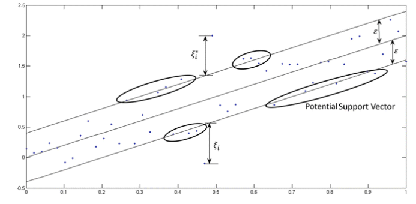
Función de Decisión#
La función de decisión para la SVR se define como:
donde:
\(\alpha_i\) y \(\alpha_i^*\) son los multiplicadores de Lagrange obtenidos del entrenamiento,
\(K(x_i, x)\) es la función de núcleo que mide la similitud entre el punto de prueba \(x\) y los puntos de entrenamiento \(x_i\),
\(b\) es el término de sesgo.
Definición del Núcleo#
El núcleo \(K(x_i, x)\) permite transformar los datos al espacio de mayor dimensión, y puede ser de diferentes tipos:
Lineal: \(K(x_i, x) = x_i \cdot x\)
Polinómico: \(K(x_i, x) = (x_i \cdot x + c)^d\)
Gaussiano (RBF): \(K(x_i, x) = \exp \left( -\gamma \|x_i - x\|^2 \right)\)
La elección del núcleo y sus parámetros afecta la capacidad del modelo para capturar relaciones complejas en los datos.
Una imagen del modelo escogiendo el kernel
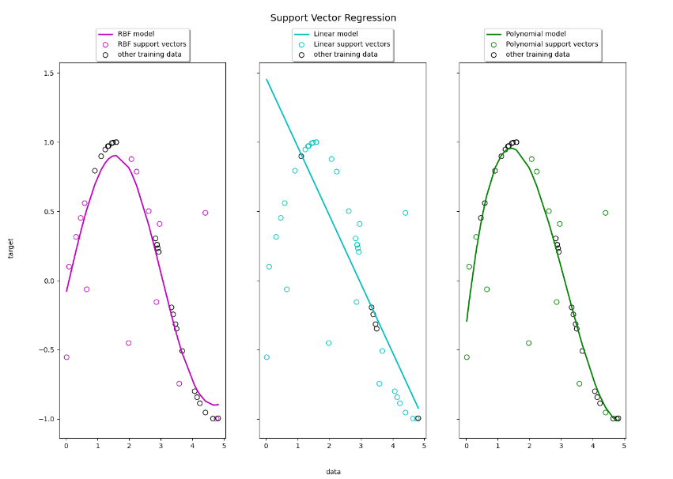
Support Vector Regression (SVR) El modelo SVR es una versión del algoritmo de Máquinas de Soporte Vectorial (SVM) aplicada a problemas de regresión.
C: Parámetro de penalización que controla el trade-off entre un ajuste perfecto del modelo y la suavidad de la función de decisión.gamma: Coeficiente del kernel que define la influencia de un solo punto de entrenamiento. Aplica a kernels no lineales como'rbf'o'poly'.kernel: Tipo de kernel utilizado en el modelo (por ejemplo, ‘linear’, ‘poly’, ‘rbf’).
Malla de Hiperparámetros para SVR:
param_grid = {
'kernel': ['linear', 'poly', 'rbf', 'sigmoid'], # Tipo de función para transformar el espacio de características
'C': [0.1, 1.0, 10.0, 100.0], # Parámetro de penalización para regularización
'gamma': ['scale', 'auto'], # Coeficiente de kernel que define la influencia de cada punto de soporte
'degree': [3, 4, 5], # Grado del kernel 'poly' (solo si kernel='poly')
'epsilon': [0.01, 0.1, 0.5, 1.0], # Tolerancia a errores en SVR
}
Construcción del modelo por SVR con kernel lineal#
from sklearn.model_selection import GridSearchCV
from sklearn.svm import SVR
# Creamos el pipeline. El último paso es el modelo SVR
pipeline_svr_linear = make_pipeline(
preprocesador,
IterativeImputer(random_state=42, max_iter=10),
StandardScaler(), # Obligatorio para SVR: los kernels calculan productos escalares sensibles a la escala
SVR(kernel='linear')
)
# =========================================================================
# CONFIGURACIÓN DEL GRIDSEARCH CON TU MALLA DE HIPERPARÁMETROS (SVR LINEAL)
# =========================================================================
# NOTA METODOLÓGICA: Excluimos 'degree' y 'gamma' porque matemáticamente no aplican al kernel lineal
param_grid_linear = {
'svr__C': [0.1, 1.0, 10.0, 100.0], # Parámetro de penalización para regularización
'svr__epsilon': [0.01, 0.1, 0.5, 1.0] # Tolerancia a errores en el tubo de la regresión
}
# Configuramos la búsqueda cruzada (1 x 4 x 4 x 5 folds = 80 iteraciones en total)
grid_search_linear = GridSearchCV(
estimator=pipeline_svr_linear,
param_grid=param_grid_linear,
scoring='neg_root_mean_squared_error', # Optimizamos minimizando el RMSE
cv=5,
n_jobs=-1
)
# =========================================================================
# EJECUCIÓN DE LA BÚSQUEDA Y EVALUACIÓN FINAL
# =========================================================================
print("Ejecutando GridSearchCV para SVR Kernel Lineal... Por favor espera.")
grid_search_linear.fit(X_train, y_train)
# Extracción limpia y correcta de la desviación estándar de Validación Cruzada
indice_mejor_linear = grid_search_linear.best_index_
desviacion_estandar_cv_linear = grid_search_linear.cv_results_['std_test_score'][indice_mejor_linear]
# Extraemos la mejor combinación encontrada en Validación Cruzada
mejores_parametros_linear = grid_search_linear.best_params_
mejor_rmse_cv_linear = -grid_search_linear.best_score_
# Evaluamos utilizando el mejor pipeline sobre el conjunto de Entrenamiento
y_pred_train_linear = grid_search_linear.best_estimator_.predict(X_train)
rmse_train_linear = np.sqrt(mean_squared_error(y_train, y_pred_train_linear))
r2_train_linear = r2_score(y_train, y_pred_train_linear)
# Evaluamos de forma ciega utilizando el mejor pipeline sobre el Test Set original
y_pred_linear = grid_search_linear.best_estimator_.predict(X_test)
rmse_test_linear = np.sqrt(mean_squared_error(y_test, y_pred_linear))
r2_test_linear = r2_score(y_test, y_pred_linear)
# =========================================================================
# REPORTE COMPARATIVO DE CONSOLA
# =========================================================================
print("\n==================================================")
print("=== RESULTADOS DE LA OPTIMIZACIÓN SVR LINEAL ===")
print("==================================================")
print(f"Mejor combinación encontrada: {mejores_parametros_linear}")
print(f"RMSE Promedio en Validación Cruzada: ${mejor_rmse_cv_linear:,.2f}")
print(f"Desviación Estándar en Val. Cruzada: ±${desviacion_estandar_cv_linear:,.2f}")
print("--------------------------------------------------")
print(f"RMSE en el Conjunto de Entrenamiento: ${rmse_train_linear:,.2f}")
print(f"R² en el Conjunto de Entrenamiento: {r2_train_linear:.4f}")
print("--------------------------------------------------")
print(f"RMSE Final en el Conjunto de Prueba: ${rmse_test_linear:,.2f}")
print(f"R² Final en el Conjunto de Prueba: {r2_test_linear:.4f}")
Ejecutando GridSearchCV para SVR Kernel Lineal... Por favor espera.
==================================================
=== RESULTADOS DE LA OPTIMIZACIÓN SVR LINEAL ===
==================================================
Mejor combinación encontrada: {'svr__C': 100.0, 'svr__epsilon': 1.0}
RMSE Promedio en Validación Cruzada: $75,727.56
Desviación Estándar en Val. Cruzada: ±$5,198.31
--------------------------------------------------
RMSE en el Conjunto de Entrenamiento: $73,031.53
R² en el Conjunto de Entrenamiento: 0.6010
--------------------------------------------------
RMSE Final en el Conjunto de Prueba: $73,834.43
R² Final en el Conjunto de Prueba: 0.5840
Construcción del modelo por SVR con kernel radial#
from sklearn.model_selection import GridSearchCV
from sklearn.svm import SVR
# Creamos el pipeline. El último paso es el modelo SVR con Kernel Radial
pipeline_svr_rbf = make_pipeline(
preprocesador,
IterativeImputer(random_state=42, max_iter=10),
StandardScaler(), # Obligatorio para SVR: los kernels calculan productos escalares sensibles a la escala
SVR(kernel='rbf')
)
# =========================================================================
# CONFIGURACIÓN DEL GRIDSEARCH CON TU MALLA DE HIPERPARÁMETROS (SVR RADIAL)
# =========================================================================
# NOTA METODOLÓGICA: Agregamos 'gamma' porque define qué tan lejos llega la influencia de un solo ejemplo
param_grid_rbf = {
'svr__C': [0.1, 1.0, 10.0, 100.0], # Parámetro de penalización para regularización
'svr__gamma': ['scale', 'auto'], # Coeficiente del kernel para controlar la curvatura
'svr__epsilon': [0.01, 0.1, 0.5, 1.0] # Tolerancia a errores en el tubo de la regresión
}
# Configuramos la búsqueda cruzada (4 C x 2 gammas x 4 epsilons x 5 folds = 160 iteraciones en total)
grid_search_rbf = GridSearchCV(
estimator=pipeline_svr_rbf,
param_grid=param_grid_rbf,
scoring='neg_root_mean_squared_error', # Optimizamos minimizando el RMSE
cv=5,
n_jobs=-1
)
# =========================================================================
# EJECUCIÓN DE LA BÚSQUEDA Y EVALUACIÓN FINAL
# =========================================================================
print("Ejecutando GridSearchCV para SVR Kernel Radial (RBF)... Por favor espera.")
grid_search_rbf.fit(X_train, y_train)
# Extracción limpia y correcta de la desviación estándar de Validación Cruzada
indice_mejor_rbf = grid_search_rbf.best_index_
desviacion_estandar_cv_rbf = grid_search_rbf.cv_results_['std_test_score'][indice_mejor_rbf]
# Extraemos la mejor combinación encontrada en Validación Cruzada
mejores_parametros_rbf = grid_search_rbf.best_params_
mejor_rmse_cv_rbf = -grid_search_rbf.best_score_
# Evaluamos utilizando el mejor pipeline sobre el conjunto de Entrenamiento
y_pred_train_rbf = grid_search_rbf.best_estimator_.predict(X_train)
rmse_train_rbf = np.sqrt(mean_squared_error(y_train, y_pred_train_rbf))
r2_train_rbf = r2_score(y_train, y_pred_train_rbf)
# Evaluamos de forma ciega utilizando el mejor pipeline sobre el Test Set original
y_pred_rbf = grid_search_rbf.best_estimator_.predict(X_test)
rmse_test_rbf = np.sqrt(mean_squared_error(y_test, y_pred_rbf))
r2_test_rbf = r2_score(y_test, y_pred_rbf)
# =========================================================================
# REPORTE COMPARATIVO DE CONSOLA
# =========================================================================
print("\n==================================================")
print("=== RESULTADOS DE LA OPTIMIZACIÓN SVR RADIAL (RBF) ===")
print("==================================================")
print(f"Mejor combinación encontrada: {mejores_parametros_rbf}")
print(f"RMSE Promedio en Validación Cruzada: ${mejor_rmse_cv_rbf:,.2f}")
print(f"Desviación Estándar en Val. Cruzada: ±${desviacion_estandar_cv_rbf:,.2f}")
print("--------------------------------------------------")
print(f"RMSE en el Conjunto de Entrenamiento: ${rmse_train_rbf:,.2f}")
print(f"R² en el Conjunto de Entrenamiento: {r2_train_rbf:.4f}")
print("--------------------------------------------------")
print(f"RMSE Final en el Conjunto de Prueba: ${rmse_test_rbf:,.2f}")
print(f"R² Final en el Conjunto de Prueba: {r2_test_rbf:.4f}")
Ejecutando GridSearchCV para SVR Kernel Radial (RBF)... Por favor espera.
==================================================
=== RESULTADOS DE LA OPTIMIZACIÓN SVR RADIAL (RBF) ===
==================================================
Mejor combinación encontrada: {'svr__C': 100.0, 'svr__epsilon': 0.01, 'svr__gamma': 'scale'}
RMSE Promedio en Validación Cruzada: $95,411.18
Desviación Estándar en Val. Cruzada: ±$1,411.34
--------------------------------------------------
RMSE en el Conjunto de Entrenamiento: $92,927.61
R² en el Conjunto de Entrenamiento: 0.3540
--------------------------------------------------
RMSE Final en el Conjunto de Prueba: $92,029.27
R² Final en el Conjunto de Prueba: 0.3537
Modelo por SVR con kernel polinomial#
from sklearn.model_selection import GridSearchCV
from sklearn.svm import SVR
# Creamos el pipeline. El último paso es el modelo SVR con Kernel Polinomial
pipeline_svr_poly = make_pipeline(
preprocesador,
IterativeImputer(random_state=42, max_iter=10),
StandardScaler(), # Obligatorio para SVR: el kernel polinomial es muy sensible a la escala
SVR(kernel='poly')
)
# =========================================================================
# CONFIGURACIÓN DEL GRIDSEARCH CON TU MALLA DE HIPERPARÁMETROS (SVR POLY)
# =========================================================================
# NOTA METODOLÓGICA: Añadimos 'degree' (3, 4, 5) que define el grado máximo del polinomio
param_grid_poly = {
'svr__C': [0.1, 1.0, 10.0, 100.0], # Parámetro de penalización para regularización
'svr__gamma': ['scale', 'auto'], # Coeficiente del kernel
'svr__degree': [3, 4, 5], # Grado del polinomio (solo aplica a este kernel)
'svr__epsilon': [0.01, 0.1, 0.5, 1.0] # Tolerancia a errores en el tubo de la regresión
}
# Configuramos la búsqueda cruzada (4 C x 2 gammas x 3 degrees x 4 epsilons x 5 folds = 480 iteraciones en total)
grid_search_poly = GridSearchCV(
estimator=pipeline_svr_poly,
param_grid=param_grid_poly,
scoring='neg_root_mean_squared_error', # Optimizamos minimizando el RMSE
cv=5,
n_jobs=-1
)
# =========================================================================
# EJECUCIÓN DE LA BÚSQUEDA Y EVALUACIÓN FINAL
# =========================================================================
print("Ejecutando GridSearchCV para SVR Kernel Polinomial... Por favor espera.")
grid_search_poly.fit(X_train, y_train)
# Extracción limpia y correcta de la desviación estándar de Validación Cruzada
indice_mejor_poly = grid_search_poly.best_index_
desviacion_estandar_cv_poly = grid_search_poly.cv_results_['std_test_score'][indice_mejor_poly]
# Extraemos la mejor combinación encontrada en Validación Cruzada
mejores_parametros_poly = grid_search_poly.best_params_
mejor_rmse_cv_poly = -grid_search_poly.best_score_
# Evaluamos utilizando el mejor pipeline sobre el conjunto de Entrenamiento
y_pred_train_poly = grid_search_poly.best_estimator_.predict(X_train)
rmse_train_poly = np.sqrt(mean_squared_error(y_train, y_pred_train_poly))
r2_train_poly = r2_score(y_train, y_pred_train_poly)
# Evaluamos de forma ciega utilizando el mejor pipeline sobre el Test Set original
y_pred_poly = grid_search_poly.best_estimator_.predict(X_test)
rmse_test_poly = np.sqrt(mean_squared_error(y_test, y_pred_poly))
r2_test_poly = r2_score(y_test, y_pred_poly)
# =========================================================================
# REPORTE COMPARATIVO DE CONSOLA
# =========================================================================
print("\n==================================================")
print("=== RESULTADOS DE LA OPTIMIZACIÓN SVR POLINOMIAL ===")
print("==================================================")
print(f"Mejor combinación encontrada: {mejores_parametros_poly}")
print(f"RMSE Promedio en Validación Cruzada: ${mejor_rmse_cv_poly:,.2f}")
print(f"Desviación Estándar en Val. Cruzada: ±${desviacion_estandar_cv_poly:,.2f}")
print("--------------------------------------------------")
print(f"RMSE en el Conjunto de Entrenamiento: ${rmse_train_poly:,.2f}")
print(f"R² en el Conjunto de Entrenamiento: {r2_train_poly:.4f}")
print("--------------------------------------------------")
print(f"RMSE Final en el Conjunto de Prueba: ${rmse_test_poly:,.2f}")
print(f"R² Final en el Conjunto de Prueba: {r2_test_poly:.4f}")
Ejecutando GridSearchCV para SVR Kernel Polinomial... Por favor espera.
==================================================
=== RESULTADOS DE LA OPTIMIZACIÓN SVR POLINOMIAL ===
==================================================
Mejor combinación encontrada: {'svr__C': 100.0, 'svr__degree': 3, 'svr__epsilon': 0.01, 'svr__gamma': 'scale'}
RMSE Promedio en Validación Cruzada: $104,928.01
Desviación Estándar en Val. Cruzada: ±$11,594.85
--------------------------------------------------
RMSE en el Conjunto de Entrenamiento: $96,591.69
R² en el Conjunto de Entrenamiento: 0.3021
--------------------------------------------------
RMSE Final en el Conjunto de Prueba: $95,009.21
R² Final en el Conjunto de Prueba: 0.3112
Regresión con Random Forest#
¿Qué es Random Forest?#
Random Forest es un algoritmo de aprendizaje supervisado basado en un conjunto de árboles de decisión (Decision Trees). Pertenece a la familia de los métodos Ensemble Learning, cuyo objetivo es combinar múltiples modelos simples para obtener un modelo más preciso y robusto.
En problemas de regresión, Random Forest predice un valor numérico calculando el promedio de las predicciones realizadas por todos los árboles del bosque.
¿Cómo funciona?#
El algoritmo construye múltiples árboles de decisión de manera independiente utilizando diferentes subconjuntos de los datos y de las variables predictoras.
El procedimiento es el siguiente:
Se generan múltiples muestras del conjunto de entrenamiento mediante Bootstrap (muestreo con reemplazo).
Para cada muestra se construye un árbol de decisión.
En cada división del árbol se selecciona aleatoriamente un subconjunto de variables predictoras.
Cada árbol realiza una predicción de manera independiente.
La predicción final corresponde al promedio de las predicciones de todos los árboles.
Este proceso reduce la varianza del modelo y mejora su capacidad de generalización.
Bootstrap#
Random Forest utiliza la técnica denominada Bootstrap Aggregating (Bagging).
Consiste en generar varios conjuntos de entrenamiento mediante muestreo aleatorio con reemplazo.
Esto significa que:
Algunas observaciones pueden aparecer varias veces en una misma muestra.
Otras observaciones pueden no aparecer.
Cada árbol se entrena con una muestra Bootstrap diferente, lo que introduce diversidad entre los árboles y mejora la estabilidad del modelo.
Selección aleatoria de variables#
Además del muestreo Bootstrap, Random Forest introduce otra fuente de aleatoriedad.
En cada nodo del árbol:
No se consideran todas las variables predictoras.
Se selecciona aleatoriamente un subconjunto de variables.
El algoritmo busca la mejor división únicamente entre esas variables.
Esta estrategia disminuye la correlación entre los árboles y mejora el desempeño del bosque.
Predicción en regresión#
Si el bosque está compuesto por (N) árboles y cada árbol genera una predicción (\hat{y}_i), la predicción final es:
Es decir, el resultado corresponde al promedio de todas las predicciones individuales.
Estos son los hiperparámetros del modelo Random Forest Regressor:
param_grid = {
# Número de árboles del bosque
"n_estimators": [100, 200, 300, 500],
# Profundidad máxima de cada árbol
"max_depth": [None, 10, 20, 30, 40],
# Número mínimo de muestras para dividir un nodo
"min_samples_split": [2, 5, 10],
# Número mínimo de muestras por hoja
"min_samples_leaf": [1, 2, 4],
# Número de variables consideradas en cada división
"max_features": [
"sqrt", # Raíz cuadrada del número de variables
"log2", # Logaritmo base 2 del número de variables
None # Todas las variables
],
# Utilizar muestreo Bootstrap
"bootstrap": [True, False],
# Criterio para evaluar la calidad de la división
"criterion": [
"squared_error", # Error cuadrático medio (MSE)
"absolute_error", # Error absoluto medio (MAE)
"friedman_mse" # Mejora basada en Friedman
],
# Número máximo de hojas por árbol
"max_leaf_nodes": [None, 10, 20, 50],
# Número mínimo de muestras en un nodo hoja ponderado
"min_weight_fraction_leaf": [0.0, 0.01],
# Fracción de muestras utilizada para entrenar cada árbol
"max_samples": [None, 0.7, 0.8, 0.9]
}
Construcción del modelo de RF#
from sklearn.model_selection import GridSearchCV
from sklearn.ensemble import RandomForestRegressor
# Pipeline unificado conservando el preprocesamiento y la semilla estocástica
pipeline_rf = make_pipeline(
preprocesador,
IterativeImputer(random_state=42, max_iter=10),
StandardScaler(),
RandomForestRegressor(random_state=42)
)
# =========================================================================
# CONFIGURACIÓN DEL GRIDSEARCH CON TU MALLA DE HIPERPARÁMETROS (RANDOM FOREST)
# =========================================================================
#param_grid_rf = {
# Número de árboles: a mayor cantidad, mayor estabilidad pero más costo computacional
# 'randomforestregressor__n_estimators': [100, 200, 300, 500],
# Profundidad máxima: controla el crecimiento del árbol (None implica sobreajuste potencial)
# 'randomforestregressor__max_depth': [None, 10, 20, 30, 50],
# Muestras mínimas para dividir un nodo: valores altos actúan como regularizadores
# 'randomforestregressor__min_samples_split': [2, 5, 10, 20],
# Muestras mínimas en una hoja: suaviza las predicciones en las regiones terminales
# 'randomforestregressor__min_samples_leaf': [1, 2, 4, 8],
# Fracción o método de selección de variables aleatorias en cada división de nodo
# 'randomforestregressor__max_features': ['sqrt', 'log2', 0.3, 0.5, 0.7],
# Porcentaje de filas asignadas a cada árbol (solo aplica si bootstrap=True)
# 'randomforestregressor__max_samples': [0.7, 0.8, 0.9, None],
# Muestreo con reemplazo; si es False, cada árbol usa el dataset completo
# 'randomforestregressor__bootstrap': [True, False],
# Umbral de ganancia de información: el nodo solo se divide si supera este valor
# 'randomforestregressor__min_impurity_decrease': [0.0, 0.01, 0.05],
# Función matemática para evaluar la calidad y el error de las divisiones
# 'randomforestregressor__criterion': ['squared_error', 'absolute_error', 'friedman_mse']
#}
param_grid_rf = {
# 200 árboles suelen ser el punto dulce entre precisión y velocidad
'randomforestregressor__n_estimators': [100, 200],
# Controlamos la profundidad para evitar que los árboles crezcan al infinito
'randomforestregressor__max_depth': [15, 30, None],
# Usamos la configuración estándar 'sqrt' o fracciones lógicas
'randomforestregressor__max_features': ['sqrt', 0.5],
# Fijamos el criterio por defecto que es óptimo y rápido para CPU
'randomforestregressor__criterion': ['squared_error']
}
# Búsqueda cruzada exhaustiva sobre las combinaciones de la rejilla
grid_search_rf = GridSearchCV(
estimator=pipeline_rf,
param_grid=param_grid_rf,
scoring='neg_root_mean_squared_error',
cv=5,
n_jobs=-1
)
# =========================================================================
# EJECUCIÓN DE LA BÚSQUEDA Y EVALUACIÓN FINAL
# =========================================================================
print("Ejecutando GridSearchCV para Random Forest... Por favor espera.")
grid_search_rf.fit(X_train, y_train)
# Extracción de la desviación estándar de Validación Cruzada
indice_mejor_rf = grid_search_rf.best_index_
desviacion_estandar_cv_rf = grid_search_rf.cv_results_['std_test_score'][indice_mejor_rf]
mejores_parametros_rf = grid_search_rf.best_params_
mejor_rmse_cv_rf = -grid_search_rf.best_score_
# Evaluamos sobre el conjunto de Entrenamiento
y_pred_train_rf = grid_search_rf.best_estimator_.predict(X_train)
rmse_train_rf = np.sqrt(mean_squared_error(y_train, y_pred_train_rf))
r2_train_rf = r2_score(y_train, y_pred_train_rf)
# Evaluamos sobre el conjunto de Prueba
y_pred_rf = grid_search_rf.best_estimator_.predict(X_test)
rmse_test_rf = np.sqrt(mean_squared_error(y_test, y_pred_rf))
r2_test_rf = r2_score(y_test, y_pred_rf)
# =========================================================================
# REPORTE COMPARATIVO DE CONSOLA
# =========================================================================
print("\n==================================================")
print("=== RESULTADOS DE LA OPTIMIZACIÓN RANDOM FOREST ===")
print("==================================================")
print(f"Mejor combinación encontrada: {mejores_parametros_rf}")
print(f"RMSE Promedio en Validación Cruzada: ${mejor_rmse_cv_rf:,.2f}")
print(f"Desviación Estándar en Val. Cruzada: ±${desviacion_estandar_cv_rf:,.2f}")
print("--------------------------------------------------")
print(f"RMSE en el Conjunto de Entrenamiento: ${rmse_train_rf:,.2f}")
print(f"R² en el Conjunto de Entrenamiento: {r2_train_rf:.4f}")
print("--------------------------------------------------")
print(f"RMSE Final en el Conjunto de Prueba: ${rmse_test_rf:,.2f}")
print(f"R² Final en el Conjunto de Prueba: {r2_test_rf:.4f}")
Ejecutando GridSearchCV para Random Forest... Por favor espera.
==================================================
=== RESULTADOS DE LA OPTIMIZACIÓN RANDOM FOREST ===
==================================================
Mejor combinación encontrada: {'randomforestregressor__criterion': 'squared_error', 'randomforestregressor__max_depth': 30, 'randomforestregressor__max_features': 'sqrt', 'randomforestregressor__n_estimators': 200}
RMSE Promedio en Validación Cruzada: $47,906.30
Desviación Estándar en Val. Cruzada: ±$425.51
--------------------------------------------------
RMSE en el Conjunto de Entrenamiento: $17,496.29
R² en el Conjunto de Entrenamiento: 0.9771
--------------------------------------------------
RMSE Final en el Conjunto de Prueba: $47,354.01
R² Final en el Conjunto de Prueba: 0.8289
Regresión con XGBoost#
¿Qué es XGBoost?#
XGBoost (Extreme Gradient Boosting) es un algoritmo de aprendizaje supervisado basado en árboles de decisión que implementa una versión optimizada de Gradient Boosting. Es uno de los modelos más utilizados en problemas de regresión y clasificación debido a su alta precisión, velocidad y capacidad para manejar conjuntos de datos complejos.
A diferencia de Random Forest, donde los árboles se construyen de manera independiente, en XGBoost cada árbol aprende de los errores cometidos por los árboles anteriores, mejorando progresivamente las predicciones.
¿Cómo funciona?#
XGBoost construye los árboles de forma secuencial.
El procedimiento es el siguiente:
Se entrena un árbol inicial.
Se calculan los errores (residuos) cometidos por ese árbol.
Se construye un nuevo árbol para corregir dichos errores.
El proceso se repite hasta alcanzar el número de árboles especificado o hasta que el error deje de mejorar.
Cada nuevo árbol intenta reducir el error acumulado por los árboles anteriores.
Gradient Boosting#
La idea principal del Gradient Boosting consiste en entrenar una secuencia de árboles débiles (weak learners), donde cada nuevo árbol se enfoca en las observaciones que fueron peor predichas anteriormente.
La predicción final corresponde a la suma de las contribuciones de todos los árboles:
donde:
\(M\) representa el número de árboles.
\(f_m(x)\) corresponde a la predicción realizada por el árbol \(m\).
¿Por qué XGBoost es tan eficiente?#
XGBoost incorpora varias mejoras respecto al Gradient Boosting tradicional:
Regularización L1 y L2 para evitar el sobreajuste.
Paralelización durante el entrenamiento.
Manejo eficiente de valores faltantes.
Estrategias de poda inteligente de árboles.
Optimización del uso de memoria.
Early Stopping para detener el entrenamiento cuando el modelo deja de mejorar.
Estas características permiten obtener modelos más rápidos y con mayor capacidad predictiva.
Estos son los hiperparámetros del modelo XGBoost Regressor:
param_grid = {
# Número de árboles
"n_estimators": [100, 200, 300, 500],
# Velocidad de aprendizaje
"learning_rate": [0.01, 0.05, 0.1, 0.2],
# Profundidad máxima de los árboles
"max_depth": [3, 5, 7, 10],
# Peso mínimo para dividir un nodo
"min_child_weight": [1, 3, 5],
# Fracción de observaciones utilizada en cada árbol
"subsample": [0.6, 0.8, 1.0],
# Fracción de variables utilizada por árbol
"colsample_bytree": [0.6, 0.8, 1.0],
# Ganancia mínima para realizar una división
"gamma": [0, 0.1, 0.3, 0.5],
# Regularización L1
"reg_alpha": [0, 0.01, 0.1, 1],
# Regularización L2
"reg_lambda": [1, 2, 5, 10],
# Reducción máxima del peso de cada hoja
"max_delta_step": [0, 1, 5],
# Método de construcción de árboles
"tree_method": [
"auto", # Selección automática
"hist" # Histograma (más rápido)
]
}
Construcción del modelo de XGBoost#
from sklearn.model_selection import GridSearchCV
from xgboost import XGBRegressor
# Pipeline unificado conservando el preprocesamiento y la semilla estocástica
pipeline_xgb = make_pipeline(
preprocesador,
IterativeImputer(random_state=42, max_iter=10),
StandardScaler(),
XGBRegressor(random_state=42)
)
# =========================================================================
# CONFIGURACIÓN DEL GRIDSEARCH CON TU MALLA DE HIPERPARÁMETROS (XGBOOST)
# =========================================================================
#param_grid_xgb = {
# Número de árboles: rondas secuenciales de corrección de residuos
# 'xgbregressor__n_estimators': [100, 200, 300, 500],
# Tasa de aprendizaje: encoge los pesos de las hojas para prevenir sobreajuste rápido
# 'xgbregressor__learning_rate': [0.01, 0.05, 0.1, 0.2, 0.3],
# Profundidad máxima: controla la complejidad y la interacción entre variables
# 'xgbregressor__max_depth': [3, 4, 5, 6, 8, 10],
# Submuestreo de filas: porcentaje de datos usado en cada iteración
# 'xgbregressor__subsample': [0.6, 0.7, 0.8, 0.9, 1.0],
# Submuestreo de columnas: porcentaje de variables al construir cada árbol
# 'xgbregressor__colsample_bytree': [0.5, 0.6, 0.7, 0.8, 1.0],
# Submuestreo de columnas por nivel: porcentaje de variables en cada nivel de profundidad
# 'xgbregressor__colsample_bylevel': [0.5, 0.7, 1.0],
# Submuestreo de columnas por nodo: porcentaje de variables evaluadas en cada división
# 'xgbregressor__colsample_bynode': [0.5, 0.7, 1.0],
# Peso mínimo del hijo: suma mínima de la hessiana requerida en una hoja terminal
# 'xgbregressor__min_child_weight': [1, 3, 5, 10],
# Parámetro Gamma: umbral mínimo de reducción de pérdida para justificar una división
# 'xgbregressor__gamma': [0, 0.1, 0.3, 0.5, 1.0],
# Regularización L2: penalización Ridge sobre los pesos vectoriales de las hojas
# 'xgbregressor__reg_lambda': [0.1, 1.0, 5.0, 10.0],
# Regularización L1: penalización Lasso que induce escasez en los pesos de las hojas
# 'xgbregressor__reg_alpha': [0.0, 0.1, 0.5, 1.0],
# Función objetivo: optimiza mediante error cuadrático, absoluto o pseudo-Huber robusto
# 'xgbregressor__objective': ['reg:squarederror', 'reg:absoluteerror', 'reg:pseudohubererror'],
# Método del árbol: 'hist' acelera drásticamente el cómputo agrupando en contenedores discretos
# 'xgbregressor__tree_method': ['hist', 'exact']
#}
param_grid_xgb = {
# Número de árboles: 100 y 300 balancean bien el sesgo secuencial sin tardar horas
'xgbregressor__n_estimators': [100, 300],
# Tasa de aprendizaje: fijamos valores estándar que controlan el paso del gradiente
'xgbregressor__learning_rate': [0.05, 0.1],
# Profundidad máxima: árboles poco profundos (3, 5, 7) evitan que el boosting memorice ruido
'xgbregressor__max_depth': [3, 5, 7],
# Submuestreo de filas: fijamos en 0.8 para forzar aleatoriedad en el entrenamiento
'xgbregressor__subsample': [0.8],
# Submuestreo de columnas: evaluamos fracciones lógicas para seleccionar variables
'xgbregressor__colsample_bytree': [0.7, 1.0],
# Valores por defecto fijos para no generar una explosión de combinaciones
'xgbregressor__colsample_bylevel': [1.0],
'xgbregressor__colsample_bynode': [1.0],
# Peso mínimo del hijo: 1 y 5 controlan la partición de hojas de forma robusta
'xgbregressor__min_child_weight': [1, 5],
# Parámetro Gamma: dejamos el valor base (0) para simplificar la poda en esta corrida
'xgbregressor__gamma': [0],
# Regularización L2 y L1 estables por defecto
'xgbregressor__reg_lambda': [1.0],
'xgbregressor__reg_alpha': [0.0],
# Función objetivo: optimizamos mediante error cuadrático medio estandarizado
'xgbregressor__objective': ['reg:squarederror'],
# Método del árbol: 'hist' agrupa en contenedores acelerando el cómputo por mil en CPU
'xgbregressor__tree_method': ['hist']
}
# Configuración del optimizador mediante validación cruzada
grid_search_xgb = GridSearchCV(
estimator=pipeline_xgb,
param_grid=param_grid_xgb,
scoring='neg_root_mean_squared_error',
cv=5,
n_jobs=-1
)
# =========================================================================
# EJECUCIÓN DE LA BÚSQUEDA Y EVALUACIÓN FINAL
# =========================================================================
print("Ejecutando GridSearchCV para XGBoost... Por favor espera (malla masiva).")
grid_search_xgb.fit(X_train, y_train)
# Extracción de la desviación estándar de Validación Cruzada
indice_mejor_xgb = grid_search_xgb.best_index_
desviacion_estandar_cv_xgb = grid_search_xgb.cv_results_['std_test_score'][indice_mejor_xgb]
mejores_parametros_xgb = grid_search_xgb.best_params_
mejor_rmse_cv_xgb = -grid_search_xgb.best_score_
# Evaluamos sobre el conjunto de Entrenamiento
y_pred_train_xgb = grid_search_xgb.best_estimator_.predict(X_train)
rmse_train_xgb = np.sqrt(mean_squared_error(y_train, y_pred_train_xgb))
r2_train_xgb = r2_score(y_train, y_pred_train_xgb)
# Evaluamos sobre el conjunto de Prueba
y_pred_xgb = grid_search_xgb.best_estimator_.predict(X_test)
rmse_test_xgb = np.sqrt(mean_squared_error(y_test, y_pred_xgb))
r2_test_xgb = r2_score(y_test, y_pred_xgb)
# =========================================================================
# REPORTE COMPARATIVO DE CONSOLA
# =========================================================================
print("\n==================================================")
print("=== RESULTADOS DE LA OPTIMIZACIÓN XGBOOST ===")
print("==================================================")
print(f"Mejor combinación encontrada: {mejores_parametros_xgb}")
print(f"RMSE Promedio en Validación Cruzada: ${mejor_rmse_cv_xgb:,.2f}")
print(f"Desviación Estándar en Val. Cruzada: ±${desviacion_estandar_cv_xgb:,.2f}")
print("--------------------------------------------------")
print(f"RMSE en el Conjunto de Entrenamiento: ${rmse_train_xgb:,.2f}")
print(f"R² en el Conjunto de Entrenamiento: {r2_train_xgb:.4f}")
print("--------------------------------------------------")
print(f"RMSE Final en el Conjunto de Prueba: ${rmse_test_xgb:,.2f}")
print(f"R² Final en el Conjunto de Prueba: {r2_test_xgb:.4f}")
Ejecutando GridSearchCV para XGBoost... Por favor espera (malla masiva).
==================================================
=== RESULTADOS DE LA OPTIMIZACIÓN XGBOOST ===
==================================================
Mejor combinación encontrada: {'xgbregressor__colsample_bylevel': 1.0, 'xgbregressor__colsample_bynode': 1.0, 'xgbregressor__colsample_bytree': 0.7, 'xgbregressor__gamma': 0, 'xgbregressor__learning_rate': 0.05, 'xgbregressor__max_depth': 7, 'xgbregressor__min_child_weight': 1, 'xgbregressor__n_estimators': 300, 'xgbregressor__objective': 'reg:squarederror', 'xgbregressor__reg_alpha': 0.0, 'xgbregressor__reg_lambda': 1.0, 'xgbregressor__subsample': 0.8, 'xgbregressor__tree_method': 'hist'}
RMSE Promedio en Validación Cruzada: $45,144.25
Desviación Estándar en Val. Cruzada: ±$288.06
--------------------------------------------------
RMSE en el Conjunto de Entrenamiento: $28,969.09
R² en el Conjunto de Entrenamiento: 0.9372
--------------------------------------------------
RMSE Final en el Conjunto de Prueba: $43,914.00
R² Final en el Conjunto de Prueba: 0.8528
Comparación de rendimiento de modelos#
Gráfica de las estimaciones de cada modelo por validación cruzada
import matplotlib.pyplot as plt
import seaborn as sns
import pandas as pd
# =========================================================================
# 1. RECOLECCIÓN DE LOS SCORES DE VALIDACIÓN CRUZADA (5 FOLDS)
# =========================================================================
# Extraemos los 5 scores de cada GridSearch y los multiplicamos por -1
# para convertirlos en RMSE positivo (valores reales en dólares)
f_lr = -cv_scores_rl # Viene de cross_val_score directo
f_ridge = -grid_search_ridge.cv_results_['split0_test_score'][indice_mejor_ridge], -grid_search_ridge.cv_results_['split1_test_score'][indice_mejor_ridge], -grid_search_ridge.cv_results_['split2_test_score'][indice_mejor_ridge], -grid_search_ridge.cv_results_['split3_test_score'][indice_mejor_ridge], -grid_search_ridge.cv_results_['split4_test_score'][indice_mejor_ridge]
f_lasso = -grid_search_lasso.cv_results_['split0_test_score'][indice_mejor_lasso], -grid_search_lasso.cv_results_['split1_test_score'][indice_mejor_lasso], -grid_search_lasso.cv_results_['split2_test_score'][indice_mejor_lasso], -grid_search_lasso.cv_results_['split3_test_score'][indice_mejor_lasso], -grid_search_lasso.cv_results_['split4_test_score'][indice_mejor_lasso]
f_en = -grid_search_elastic.cv_results_['split0_test_score'][indice_mejor_elastic], -grid_search_elastic.cv_results_['split1_test_score'][indice_mejor_elastic], -grid_search_elastic.cv_results_['split2_test_score'][indice_mejor_elastic], -grid_search_elastic.cv_results_['split3_test_score'][indice_mejor_elastic], -grid_search_elastic.cv_results_['split4_test_score'][indice_mejor_elastic]
f_knn = -grid_search_knn.cv_results_['split0_test_score'][indice_mejor_knn], -grid_search_knn.cv_results_['split1_test_score'][indice_mejor_knn], -grid_search_knn.cv_results_['split2_test_score'][indice_mejor_knn], -grid_search_knn.cv_results_['split3_test_score'][indice_mejor_knn], -grid_search_knn.cv_results_['split4_test_score'][indice_mejor_knn]
f_lin = -grid_search_linear.cv_results_['split0_test_score'][indice_mejor_linear], -grid_search_linear.cv_results_['split1_test_score'][indice_mejor_linear], -grid_search_linear.cv_results_['split2_test_score'][indice_mejor_linear], -grid_search_linear.cv_results_['split3_test_score'][indice_mejor_linear], -grid_search_linear.cv_results_['split4_test_score'][indice_mejor_linear]
f_rbf = -grid_search_rbf.cv_results_['split0_test_score'][indice_mejor_rbf], -grid_search_rbf.cv_results_['split1_test_score'][indice_mejor_rbf], -grid_search_rbf.cv_results_['split2_test_score'][indice_mejor_rbf], -grid_search_rbf.cv_results_['split3_test_score'][indice_mejor_rbf], -grid_search_rbf.cv_results_['split4_test_score'][indice_mejor_rbf]
f_poly = -grid_search_poly.cv_results_['split0_test_score'][indice_mejor_poly], -grid_search_poly.cv_results_['split1_test_score'][indice_mejor_poly], -grid_search_poly.cv_results_['split2_test_score'][indice_mejor_poly], -grid_search_poly.cv_results_['split3_test_score'][indice_mejor_poly], -grid_search_poly.cv_results_['split4_test_score'][indice_mejor_poly]
f_rf = -grid_search_rf.cv_results_['split0_test_score'][indice_mejor_rf], -grid_search_rf.cv_results_['split1_test_score'][indice_mejor_rf], -grid_search_rf.cv_results_['split2_test_score'][indice_mejor_rf], -grid_search_rf.cv_results_['split3_test_score'][indice_mejor_rf], -grid_search_rf.cv_results_['split4_test_score'][indice_mejor_rf]
f_xgb = -grid_search_xgb.cv_results_['split0_test_score'][indice_mejor_xgb], -grid_search_xgb.cv_results_['split1_test_score'][indice_mejor_xgb], -grid_search_xgb.cv_results_['split2_test_score'][indice_mejor_xgb], -grid_search_xgb.cv_results_['split3_test_score'][indice_mejor_xgb], -grid_search_xgb.cv_results_['split4_test_score'][indice_mejor_xgb]
# =========================================================================
# 2. CONSTRUCCIÓN DEL DATAFRAME PARA SEABORN
# =========================================================================
# Convertimos las listas/arrays a un diccionario plano estructurado para graficar
data_grafico = {
'Regresión Lineal': f_lr,
'Ridge': f_ridge,
'Lasso': f_lasso,
'ElasticNet': f_en,
'KNN Regression': f_knn,
'SVR Lineal': f_lin,
'SVR RBF': f_rbf,
'SVR Poly': f_poly,
'Random Forest': f_rf,
'XGBoost': f_xgb
}
df_boxplot = pd.DataFrame(data_grafico)
# =========================================================================
# 3. DISEÑO Y RENDERIZADO DEL DIAGRAMA DE CAJAS
# =========================================================================
plt.figure(figsize=(14, 7))
sns.set_theme(style="whitegrid")
# Graficamos las cajas de forma horizontal para facilitar la lectura de los nombres
ax = sns.boxplot(
data=df_boxplot,
orient="h",
palette="Spectral",
linewidth=1.8,
flierprops={"marker": "o", "markerfacecolor": "red", "markersize": 6} # Resalta outliers en rojo
)
# Añadimos capas de puntos (stripplot) para ver la distribución exacta de los 5 folds
sns.stripplot(data=df_boxplot, orient="h", color="black", alpha=0.6, size=5, jitter=0.1)
# Formateo de etiquetas y estética científica
plt.title('Comparación de Estabilidad de Modelos de Regresión\nDistribución del RMSE en Validación Cruzada ($K=5$)', fontsize=15, pad=15, weight='bold')
plt.xlabel('Root Mean Squared Error (RMSE) en USD ($)', fontsize=12, labelpad=10)
plt.ylabel('Algoritmos / Modelos Evaluados', fontsize=12)
# Formateamos el eje X con separadores de miles para que sea legible estadísticamente
ax.xaxis.set_major_formatter(plt.FuncFormatter(lambda x, loc: "{:,}".format(int(x))))
plt.tight_layout()
plt.show()
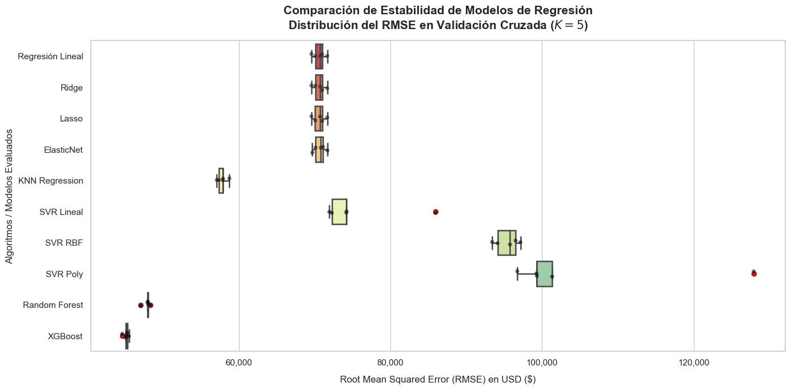
Importancia de las variables del mejor modelo#
import matplotlib.pyplot as plt
import seaborn as sns
import pandas as pd
import numpy as np
# =========================================================================
# 1. RECUPERAR NOMBRES DE LAS VARIABLES TRAS EL PREPROCESAMIENTO
# =========================================================================
# Extraemos el mejor modelo (pipeline) entrenado
mejor_pipeline_xgb = grid_search_xgb.best_estimator_
# Recuperamos los nombres de las columnas categóricas codificadas (OneHotEncoder)
nombres_cat = mejor_pipeline_xgb.named_steps['columntransformer'] \
.named_transformers_['cat'] \
.get_feature_names_out(col_categoricas).tolist()
# El resto de variables pasaron intactas ('passthrough'), por lo que conservan su nombre original
# Reconstruimos el orden total de la matriz que alimentó a XGBoost
todas_las_variables = nombres_cat + col_numericas
# =========================================================================
# 2. EXTRAER IMPORTANCIAS DESDE XGBOOST
# =========================================================================
# Extraemos los pesos de importancia nativos del modelo (por defecto usa 'gain')
importancias = mejor_pipeline_xgb.named_steps['xgbregressor'].feature_importances_
# Creamos un DataFrame para estructurar y ordenar los resultados
df_importancia = pd.DataFrame({
'Variable': todas_las_variables,
'Importancia': importancias
}).sort_values(by='Importancia', ascending=False)
# =========================================================================
# 3. REPORTE EN CONSOLA
# =========================================================================
print("==================================================")
print("=== VARIABLES MÁS IMPORTANTES (XGBOOST) ===")
print("==================================================")
print(df_importancia.to_string(index=False, formatters={'Importancia': '{:.4f}'.format}))
# =========================================================================
# 4. GRÁFICO DE BARRAS DE IMPORTANCIA
# =========================================================================
plt.figure(figsize=(10, 6))
sns.set_theme(style="whitegrid")
sns.barplot(
x='Importancia',
y='Variable',
data=df_importancia,
palette='viridis'
)
plt.title('Importancia de las Variables - Mejor Modelo XGBoost\n(Métrica basada en Ganancia / Gain)', fontsize=14, weight='bold', pad=15)
plt.xlabel('Importancia Relativa', fontsize=12, labelpad=10)
plt.ylabel('Variables / Características', fontsize=12)
plt.tight_layout()
plt.show()
==================================================
=== VARIABLES MÁS IMPORTANTES (XGBOOST) ===
==================================================
Variable Importancia
ocean_proximity_INLAND 0.5240
median_income 0.1876
population_per_household 0.0552
latitude 0.0383
longitude 0.0364
bedrooms_per_room 0.0354
rooms_per_household 0.0341
housing_median_age 0.0257
ocean_proximity_NEAR OCEAN 0.0233
ocean_proximity_NEAR BAY 0.0212
ocean_proximity_ISLAND 0.0188
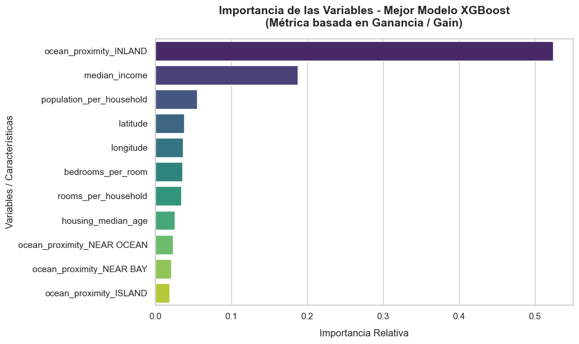
Empaquetamiento del mejor modelo#
import joblib
# =========================================================================
# 1. EMPAQUETAR Y GUARDAR EL MEJOR PIPELINE
# =========================================================================
# Extraemos el estimador óptimo final (el pipeline completo ya entrenado)
mejor_modelo_completo = grid_search_xgb.best_estimator_
# Definimos el nombre del archivo (usualmente se usa la extensión .pkl o .joblib)
ruta_guardado = 'mejor_modelo_xgb_pipeline.joblib'
# Guardamos el objeto en el disco duro con un nivel de compresión óptimo (3)
joblib.dump(mejor_modelo_completo, ruta_guardado, compress=3)
print("==================================================")
print(f"¡Pipeline empaquetado con éxito usando Joblib!")
print(f"Archivo guardado en: {ruta_guardado}")
print("==================================================")
# =========================================================================
# 2. CÓMO CARGAR EL MODELO EN OTRO SCRIPT (PARA PRODUCCIÓN / DESPLIEGUE)
# =========================================================================
# Imagina que este es un archivo de Python completamente nuevo (ej. app.py)
# Cargamos el pipeline con una sola línea de código
modelo_desplegado = joblib.load('mejor_modelo_xgb_pipeline.joblib')
# Para hacer predicciones, solo necesitas pasarle un DataFrame con los datos CRUDOS
# Nota: Deben ser las mismas columnas originales del X (sin transformaciones manuales)
# predicciones_nuevas = modelo_desplegado.predict(df_nuevos_datos_crudos)
==================================================
¡Pipeline empaquetado con éxito usando Joblib!
Archivo guardado en: mejor_modelo_xgb_pipeline.joblib
==================================================
Predicción usando el mejor modelo empaquetado#
import joblib
import pandas as pd
# =========================================================================
# 1. CARGAR EL MODELO EMPAQUETADO
# =========================================================================
# Cargamos el pipeline completo (Preprocesador + Imputador + Scaler + XGBoost)
modelo_produccion = joblib.load('mejor_modelo_xgb_pipeline.joblib')
# =========================================================================
# 2. SIMULACIÓN DE DATA NUEVA (DATOS CRUDOS)
# =========================================================================
# Supongamos que llega una nueva casa al mercado.
# NOTA: Debes pasar exactamente las mismas columnas que tenía tu variable 'X'.
# NO incluyes 'median_house_value' (el target) ni las columnas absolutas que borraste.
nuevo_registro = {
'longitude': [-122.23],
'latitude': [37.88],
'housing_median_age': [41.0],
'median_income': [8.3252],
'ocean_proximity': ['NEAR BAY'],
# Tus 3 variables de ingeniería de características calculadas previamente
'rooms_per_household': [6.9841],
'bedrooms_per_room': [0.1023],
'population_per_household': [2.5555]
}
# Convertimos el diccionario a un DataFrame de Pandas (requisito de Scikit-Learn)
df_nuevo = pd.DataFrame(nuevo_registro)
# =========================================================================
# 3. EJECUTAR LA PREDICCIÓN EN PRODUCCIÓN
# =========================================================================
# El pipeline recibe la data cruda, aplica internamente las transformaciones y predice
prediccion_usd = modelo_produccion.predict(df_nuevo)
print("==================================================")
print("=== PREDICCIÓN EN PRODUCCIÓN ===")
print("==================================================")
print(f"El valor estimado para la propiedad es: ${prediccion_usd[0]:,.2f} USD")
==================================================
=== PREDICCIÓN EN PRODUCCIÓN ===
==================================================
El valor estimado para la propiedad es: $443,099.88 USD